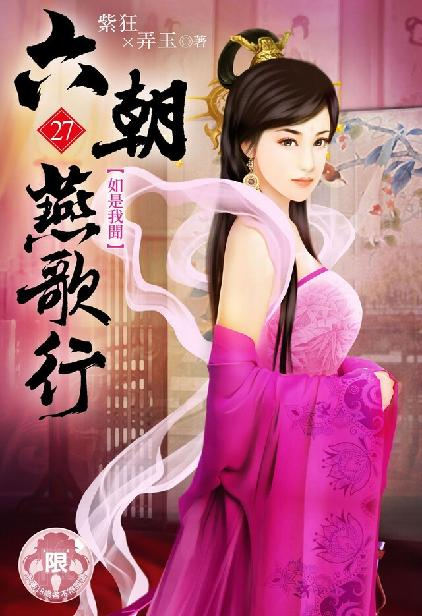

唐国篇
出版日期：2022年 06月 23日
【本集内容简介】
这个时代竟出现许多不该有的物件，其中包括超过了现代科技的神秘产物……
田让做为广源行的说客，带着一只锦盒来晋见程宗扬，而锦盒里赫然是一张清晰无比的“照片”，这代表了史三手上必定有一台相机，甚至还握有冲洗出来的技术和资源……
为了试探史三虚实，程宗扬上了史三的门，却见他除了照相机之外，还有许多这个时代不该有的物件，其中甚至包括超过了现代科技的神秘产物……
※ ※ ※ ※ ※
长安。靖恭坊。
天已黄昏，大雪纷飞。
一名峨冠博带的文士扶着长剑，大袖飘飘穿过天井，然后在廊下止步，举手正了正衣冠。
门内垂着一道轻纱软帘，隐隐能看到里面身姿妖娆的美婢。
文士解下佩剑，然后在帘外俯身拜倒，“臣史举，拜见主上。”
门内一个粗豪的声音道：“那位程侯呢？”
“禀主上，程侯已至坊中，只是去了那处新建的会馆。”
“有意思。入坊不至，莫非是要我亲自登门拜访？”
史举免冠顿首，“臣无能，请主上责罚。”
房内沉默片刻，然后传来一声朗笑，“到底是我史叁缘浅德薄，难入程侯法眼，岂能怪罪先生？反倒是让先生为难，乃我史叁之过！”
“臣不敢。”史举俯首道：“臣虽未面见程侯，但观其行止，实为外仁而内残，好色而忘义之徒。所至之处，无不天地翻覆，腥风血雨，可谓祸心深藏，其志非小。主上虽有饲虎之意，却恐有反噬之危。”
房内人抚掌大笑，“先生所言极是！若非此人行径凶险，居心叵测，我史叁何必不远万里，只求一晤？我不怕他是噬人的恶虎，只怕他爪牙不够锋利！胃口不够大！”
史举劝谏道：“既然如此，主上何不亲自登门，以示赤诚？”
“事到如今，我若主动登门，只会被他小觑。这尺寸之地，我史叁绝不会退让。也罢！劳累先生了，且先去歇息。”
史举施了一礼，然后佩剑着冠，倒退着离开天井。
等史举走远，房内那个声音带着怒气道：“连程侯的面都未曾见，还有脸回来！食我之粟，受我之禄，连这点小事都办不好！”
“去！”那声音吩咐道：“将此物带给田让。让他即刻去拜见程侯，当面奉交，请程侯品鉴。”
“是。”一名雪肤金发的美姬掀帘出来，手中捧着一只锦盒，轻移莲步，消失在廊侧。
“外仁内残，好色忘义……”房内的声音喃喃道：“程侯啊程侯，你可莫要让史叁失望。”
眼皮仿佛灌了铅一样，又沉又涩。鱼玄机吃力地睁开双眼，一点灯光跃入眼帘。
那盏油灯摆在漆黑的几案上，淡黄的灯芯微微挑起，芯上荧光如豆。
凄清的灯光宛如一片岁月久远的珠辉，只映出尺许范围，便黯淡下来。周围的一切都沉浸在寂静的黑暗中。
鱼玄机挣扎了一下，却发现自己悬在一片绳网上，手脚都被缚住。她暗暗调息片刻，然后双腕一拧。
真气迸发，缚在腕上的朱绳却宛如活物般猛然收紧，绳上仿佛伸出无数细小的触手，丝丝钻入血脉，鼓荡的真气随即宣泄一空。
鱼玄机玉脸发白，她手脚同时使力，一边忍受着真气外泄，一边竭力撕扯。
朱红色的绳网慢慢拉长，捆在一起的手脚一寸一寸分开，忽然整个绳网倾覆过来，原本卧在网上的鱼玄机头脸低垂，倒挂在网下。
鱼玄机心跳几乎停了一拍，她一直被缚在网上，此时倒悬过来，才发现自己身前赫然是一只骷髅头。
那骷髅戴着一顶破损法冠，下面是一袭湿漉漉的内侍服。它双掌合什，盘膝而坐，袖中伸出的手掌血肉干枯，尸斑处处，宛如青黑的竹节。
那只低垂的骷髅头一点一点昂起，耳边仿佛能听到骨节摩擦的声音。在它眉心，有一个乌黑的孔洞，如同一口古井，幽深无比。
那只独目仿佛有魔力一样，将鱼玄机的目光牢牢吸引住，动弹不得。
忽然空洞的圆孔中绽出一丝血光，仿佛冥冥中，一尊魔神睁开一只血红的眼睛，与她对视。
“啊！”鱼玄机再压抑不住心底的恐惧，惊呼失声。
朱红色的绳网蠕动着，伸出几根丝绳，攀住她的手膝，将她身子牢牢缚住。另外两根则攀上粉腮，探入口中，缠住她的香舌，将她的惊叫声堵在喉中。
骷髅额心的血目缓缓收敛，一股寒风悄然卷起。从屋梁上垂落的白绫，空荡荡地摇曳起来。
靖恭坊。水香楼。
净街的鼓声刚刚止歇，几名坊卒顶着风雪，齐声喊着号子，用力合上坊门。
“咣”的一声，寒风被厚实的坊门关在坊外，呼啸的风声戛然而止，漫天飞舞的雪花变得安详起来，纷纷扬扬穿过斑斓的灯火，一片一片缓缓落在庭间。
一名寒士穿过天井，在廊下止步。虽是隆冬季节，他仍穿着一袭破旧的粗布短衣，踏着一双草鞋，半露着小腿。
两名娇俏的小婢打开门帘，一股暖融融的香风扑面而来。
一名美妇握着手炉出来，看了眼那人已经被雪水湿透，底都快掉了的草鞋，不禁又是讶异，又是好笑。
“秀儿，取条毛巾来。”兰姑一边吩咐小婢，一边笑着说道：“不是嫌弃贵客，只是外面天寒地冻，里面烧着炭火，怕贵客脚还湿着，易生冻疮。”
“多谢好意。不劳相烦。”
那寒士脱下草鞋，放在阶旁，从怀中取出一块粗布，将双足揩抹干净。
“贵客请随我来。”
兰姑领着那寒士入内，抬阶而上。
楼上大堂中点着灯烛，两只仙鹤喷吐香雾，暖香怡人。一名戴着金冠的年轻人斜靠在坐榻上，锦衣半敞，一手拿着玉盏，一手揽着一名身姿妖娆的艳姬，正在嬉戏笑乐。
那寒士目不斜视，以觐见王侯的礼仪，在席前俯身参拜，沉声道：“史氏门下客，田让，拜见君侯。”
程宗扬一副放浪形骸的姿态，眼睛微微眯起，打量着这名葛衣赤足，皮肤黝黑的寒士，片刻后笑道：“竟然是田先生，却让本侯始料未及。”
程宗扬随手丢下玉盏，放开怀中戴着面具的艳姬，口气转寒，“本侯亲至坊中，却只派了个门客来见，你家主人好大的架子。”
“让久闻君侯宽仁大度，有贤者之风，此番引君侯动怒，皆让之过。”田让昂首挺胸，不卑不亢地说道：“然敝上非有意怠慢，其中缘由，实不足为外人道也。”
程宗扬嗤笑道：“莫非是你家主子长得见不得人？”
田让振衣而起，“让闻，对子骂父，是为无礼。敢问君侯足下，当客骂主，究竟是哪家的礼数？”
程宗扬一时语塞，接着一拍几案，厉喝道：“还好意思讲礼数！我那两个婢子呢！”
程侯顾左右而言他，也算让了半步，田让没有逼迫太甚，揖手道：“贵眷正在舍下作客，每日衣食奉给，不敢有失。”
“作客？是当人质吧？”程宗扬不悦地说道：“几次三番邀我登门，你家主人到底打的什么主意？”
“吾主诚心结交君侯，才屡屡相请。”
“你家主子什么来历？这么遮遮掩掩的，故意吊我胃口呢？”
田让泰然道：“吾主经商多年，如今在晴州一商行任主管。”
“广源行吧？”
“正是。”
程宗扬笑了起来，“怪不得要藏头露尾呢。广源行暗算本侯可不是一回两回了，你猜本侯会不会一刀砍死你，把你的尸首丢给你家主子？”
“让七尺微躯，草芥之辈，性命微贱，只是请君侯明鉴，吾主虽为广源行主管，却并非掌管唐国生意。”
“都是广源行的人，唐国的生意跟他没关系？”
“君侯与吾主一晤，便知其详。”
“本侯倒是奇怪，你家主子锲而不舍，就这么笃定我会去吗？”程宗扬冷笑道：“要是我不去呢？”
田让从袖中取出一只锦盒，双手奉上，“吾主有一物在此，还请君侯品鉴。若君侯赏面，光临敝处，让自当为君侯前驱。若君侯无意，让这便告辞，贵眷自当奉还。”
程宗扬盯了他半晌，然后道：“拿过来。”
戴着面具的艳姬伸出玉手，接过锦盒，在席前打开。
盒内的物品映入眼帘，程宗扬心里顿时咯噔一声，瞳孔猛然收缩。
锦盒内放着一张四四方方的卡片，不及手掌大小，上面绘着一名衣饰华美的女子，雪肤花貌，栩栩如生。虽然面容纤不盈寸，可色泽鲜艳，眉眼清晰无比，甚至连每一根睫毛都能数得出来。
程宗扬望着那张卡片一时失神，连上面女子的面容都没看清。
这不是什么手绘的小像，而是一张照片！
而且是一张清晰度极高，纸质尚新，似乎拍摄没多久的照片！
这个史叁手里有一部相机？
他从哪里得来的？某个秘境的遗物？还是在六朝流传多年，最后却落在了他手中？
田让长揖一礼，“让冒昧，且请为君侯执辔。”
“回去告诉你家主人，”程宗扬沉声道：“本侯这便前去拜会。”
外面街市已经宵禁，坊内依然人来人往。几间食肆仍开着门，为冒雪归来的旅人提供热汤饭食。
水香楼侧，已经改成佛寺的摩尼寺内，不时有红袍赤膊的沙弥进出。寺角的柴房里，一名老僧蹲在牖下，捧着破旧的木碗，用木勺刮着碗上残剩的粥饭，仰首舔舐干净。
车声遴遴，碾过青石长街。南霁云策骑在前，敖润、吴三桂一左一右堕在后面，三人品字型护在车驾左右。
潘金莲好奇地望着那张照片，“这是用你说的那种‘机器’拓影而成？比影月宗的拓影术可要清晰百倍，纤毫毕显。”
程宗扬思绪纷纭，自己即使在梦里，也没想过能在六朝拥有一台能拍出照片的相机。毕竟留影容易，自己手里那部摄像机就能做到，可要制作照片，还需要油墨、相纸、冲印设备，这些远比留影要麻烦得多。
除非有一部拍立得，但油墨和相纸也是有限的。这张照片色彩崭新，似乎拍摄不久——这意味着史叁手里不仅有一部能正常使用的相机，还有能够正常制作照片的设备，而且他还知道怎么使用！
试想一下，假如自己能和紫丫头、潘金莲，还有赵飞燕、吕雉、杨贵妃合影留念，那是一种什么样的经历？
假如有一天自己突然消失，留下的照片也是自己存在过的最好证据，总不至于像岳鸟人，连画像都没有留下一副，自己连他长得什么鬼样子都只能靠想像。
自己既然来到靖恭坊，就已经准备好要会会这个史叁。但这张照片的出现，使他对这次会面生出一丝别样的急切和期待。
得知史叁入住李宏的家宅，自己对他的身份就有所猜测。只是不明白一个广源行的主管，为何净干些给广源行拆台的勾当？
听田让方才话中的暗示，史叁跟唐国的同行并不对付。若是所言非虚，倒是一个窥探广源行内幕的机会。
同在一坊，李宏的住处并不远。不多时，众人便来到坊南一处大宅。
两名戴着高冠的文士立在门外，见打着程侯旗号的车马过来，两人抬起宽大的衣袖，长揖到地，“君侯大驾光临，寒舍蓬荜生辉。”
郑宾驾车停在阶前，南霁云跃下马，当先入内，敖润与吴三桂驻马戒备。
两名文士直起身，只见一名戴着面具的侍姬掀开车帘，车内那位头戴金冠的年轻人笑道：“哪位是史叁爷？这么牛逼的人物，程某可得认识一下。”
一名文士躬身道：“在下史举，见过程侯。”
另一名长髯文士道：“主上已恭候多时，请。”
程宗扬心下冷笑，自己亲自登门，主人都不出来迎接，这史叁除非是双腿齐断，便是丝毫不把自己放在眼里。
除了老敖、老吴和南八，任宏等人早已先行一步，在左近布防，真要翻脸，也有人接应。
程宗扬下了车，一边负着手，慢条斯理地踱着步，一边道：“听说贵东在晴州经商？生意怎么样啊？”
长髯文士道：“托君侯的福，生意尚可。”
程宗扬哈哈一笑，“说笑了，我可没那个福气。哎，你们俩是什么马？是不是阉过的骟马？”
两人脸色僵了一下，笑容凝在脸上。
“这地方不错，比我那院子大多了。”程宗扬若无其事地说道：“我进来的时候看到灯笼上写的李字，不会是哪位宗亲的宅院吧？”
史举道：“此乃李宏的私宅。”
“李宏？哦，听说过，长安有名的富商，为人慷慨豪爽，仗义疏财。我就说嘛，这作派一听就是败家的行径，还经商呢。原来是你们养的牲口，专门用来卖弄邀名的吧？”
长髯文士不禁面露怒色，史举拱手道：“还请君侯息怒，敝上并无恶意。”
程宗扬冷笑道：“没恶意就敢抓我的女人？要是敢有点儿恶意，是不是就该抓我了？”
“程侯何必咄咄逼人？”长髯文士道：“须知主上可是给程侯留足了颜面，否则……哼。”
“胆子不小啊。竟然敢直呼本侯的姓氏？”程宗扬冷笑道：“我这人心眼儿可小得很，你等着吧。”
长髯文士夷然不惧，伸手掀开门帘，硬梆梆道：“请！”
穿过天井，门前的轻纱早已拢起，只见厅中灯火通明，尤其是案上一支萤白的圆筒，散发出柔和而稳定的光线，将满厅的灯火烛光都压了下去。
程宗扬嘴唇微微抿紧。这还是除了自己之外，他第一次在六朝见到有人使用超时代的电气设备，而且除了灯筒本身，没有任何底座、电源之类的附加物，结构简洁，看起来比自己的台灯、手电筒科技含量更高。
六朝的秘境内遗留有大量超时代物品，出现在外界并不奇怪，更何况还有那么多穿越先辈，总不可能一个识货的都没有。这样想来，反而自己以前从未见过有人使用这类物品才是怪事。
这个史叁，手里已经有了照相和印刷设备，又有这样看起来就极其先进的灯饰，不会挖到某个秘境的电气设备商店了吧？
“篷”的一声闷响，却是吴三桂正要入内，被那长髯文士横身拦住，吴三桂双臂交错，与他硬碰一记，双方各自一晃。
长髯文士面色微微一白，随即恢复正常，“主上要见的只是侯爷，还请诸位在外稍候。”
吴三桂双臂一振，臂上泛起一抹金光。两名文士如临大敌，衣袍微微鼓起。
剑拔弩张之际，程宗扬开口道：“行了，你们就在外面等着。”说着向戴着面具的潘姊儿和吴三桂使了个眼色。
一众随从都留在外面，两名文士放下门帘，厅内斗然一静。
程宗扬仔细看了一眼，那道帘子内外两重，外面是一层精美的轻纱，内层分成两半，却是用金丝绣满花纹，纹路玄奥而又繁复，显然不是普通的纹饰，而是不同的符文。分开时，纹饰灵光内蕴，落下时合在一起，符文便即生效。这等手段，比自己用过的符箓可要高出一筹。
屏风后传来一声长笑，“可是君侯大驾光临？寒舍蓬荜生辉啊。”
你们就会这一句词吧？
程宗扬语带讥刺地说道：“不会是史叁爷吧？这话说的，我还以为是迎宾通传的谒者呢。”
屏风后传来细碎的环佩声响，一个花枝般的少女娉婷而出。她身材修长，腰如细柳，步履轻盈如烟，秀发挽成鬟髻，发色却是花蕊般的金黄。
程宗扬露出一丝惊讶，这少女一头金发，皮肤白皙，五官却如六朝女子一样精致柔和，显然是一名有着六朝血统的混血儿，而且是混得最好的那种，不但容貌娇美，而且纤腰丰臀，身材火辣。
随即他看到一只又黑又糙的手掌，那手掌五指粗短，指背上生着一丛丛黑硬的鬃毛，这时正放在少女圆翘的美臀上，让人看一眼就觉得亵渎了美人儿。
程宗扬目光向下，与那人的视线对上——没办法，这孙子生得实在太矮了，个头儿还没有那少女的腰高。方脑壳，大饼脸，前凸的下颌生着短髭，肤色黑糊糊的，就像涂满没洗干净一样的芝麻糊一样。
王显上身长下身短，这家伙更惨，就像是把王显压扁一半，再把两条腿锯掉一截——差不多就是侏儒了。
人家王显身材比例虽然不大协调，起码长得不寒碜。这家伙的相貌只能用俩字儿来形容：甚寝！
他穿着一身色彩炫目的锦服，衣上的纹饰金镶银嵌，华贵非常，但衬着他的身形相貌，让人不由得想起“沐猴而冠”四个字——即使在猴子里，他都算长得丑的！
长得丑也就罢了，他还非要跟个混血美少女站在一起，对比之下，连牛粪都不如，简直就是狗屎！偏偏这泡狗屎还不安分，那手在少女的腰臀上摸来摸去，让程宗扬都恨不得把他的手给剁了。
那矮子仰天道：“在下史叁，朋友们抬爱，称一声史三爷。”
程宗扬忍不住道：“你上面还有俩哥？”
史叁哈哈大笑，“我那些兄长有些比我俊俏得多，有些比我还丑！”
那你爹妈得多糟心啊？
程宗扬忍住没说出来，带着一丝冷笑道：“怎么？我也叫你一声三爷？”
那矮子深深看了他一眼，“不是三爷。是史叁。”说着他放开那混血少女，抬手道：“程侯请坐。”
程宗扬原地未动，“不必了，我是来接人的，接上人我就走。”
史叁用力一蹦，坐在椅中，“程侯不想与史叁聊聊吗？”
“大家又不熟，有什么好聊的。”
史叁往后一靠，他两条粗壮的短腿垂不下来，只随意放在椅面上，“程侯是觉得史叁没有诚意？”
“诚意？我还真没看出来。”程宗扬道：“本侯一进门，贵属就敢给我脸色看，好大的诚意。”
史叁摸了摸下巴的短髭，吩咐道：“摇金，去问问，方才是谁得罪了程侯？把他带进来。”
那混血少女应了一声，扭着纤腰，掀帘出去。
史叁笑道：“此婢姓柳，乃是李宏养的宠婢。程侯若是喜欢，尽可带走。”
程宗扬道：“君子不夺人所好。”
史叁哈哈大笑，“此婢本就是李宏家中豢养的玩物，专为投人所好。程侯不取，岂非明珠暗投？”
“以人为玩物，这就是贵行的生意？”
“程侯有圣人之名，岂不闻圣人不仁，以百姓为刍狗？”
程宗扬脸一黑。这孙子打听得还真清楚。
说话间，门帘分开，柳摇金侧着身，托着一只朱漆木盘进来。当她转过身，程宗扬眼角蓦然一跳。
那木盘上赫然放着一颗首级，盘上不是朱漆，而是鲜血，头颅的颌下一丛长须浸在血泊中，正是那名长髯文士！
史叁笑道：“程侯，可以坐了吧？”
程宗扬暗暗吸了口气。自己本来是故意找茬，等把人要来，好找借口翻脸走人。没想到这矮子这么狠，对手下说杀就杀，这“诚意”可够大的。
程宗扬面上不动声色，撩起袍角在客位坐下，对那首级看都不看，仿佛理所当然一样，径自说道：“听说程某有两名婢女迷路，幸得阁下收留？”
那矮子瞥了他身后的侍女一眼，然后摆了摆手，粗声大气地说道：“这些都是小事！程侯有意，随时可以带她们走。”
“哦？那就请阁下叫她们出来吧。”
“哈哈哈哈……”史叁发出一阵朗笑，接着笑声戛然而止。
他身材短小，相貌粗鄙，然而此时粗短的手掌按住扶手，矮小的身体微微前倾，流露出一股逼人的霸气，沉声道：“史叁的诚意程侯已经见过了，敢问程侯的诚意呢？”
程宗扬放松身体，随意靠在椅中，“你想要什么诚意？”
“当然是开诚布公，肝胆相照的诚意。”
“少跟我打谜语，有话直说。”
史叁笑道：“不知那张小像，可入程侯法眼？”
“美人如花，花似美人，”程宗扬随口赞了一句，然后道：“不知是阁下哪位姬妾？”
史叁似笑非笑地说道：“程兄怎知这上面画的是真人？”
“废话，手绘和照片我还能分得出来。”
史叁抚掌大笑，“果然瞒不过程兄！”
“看起来还挺新，刚打印出来的？”程宗扬用寻常口气道：“打印的设备在哪儿呢，让我也开开眼。”
史叁拍着扶手道：“昔有卖珠者，为木兰之柜，薰以桂椒，缀以珠玉，饰以玫瑰，辑以翡翠。客见之，买其椟而还其珠。”
“你说我买椟还珠？”
史叁嘿嘿一笑，对那混血少女道：“去，把那位夫人叫来。”
“是。”柳摇金脆生生应了一声，将盛着人头的木盘放在案上，敛衣退下。
片刻后，屏风后传来细微的脚步声，接着眼前一亮，一名戴着花冠的美妇出现在厅中。
那妇人年约三十，眉枝如画，肌肤雪白，身材丰腴而又柔软，眉眼间流露出醉人的风情，正是照片上那名女子。她穿着一件朱红的罗衣，冠上的鲜花轻轻摇曳，花香伴随着体香，阵阵袭来。
史叁道：“程侯看此妇如何？”
程宗扬道：“好个美妇人，人比花娇，风韵十足。”
“程侯好眼光！”史叁抚掌笑道：“绘像再精，到底是死物，哪里比得上真人活色生香？这位沅夫人今年刚满三十，还未曾生育过。据说前有莲径，后有丹穴，丰肌玉骨，体润如酥。来，让贵客观赏一番。”
那美妇看到案上的首级，眼底不由闪过一丝怯意，慌忙避开视线。听到主人的吩咐，连忙换上笑容，抬手解开颈下的衣纽，就这么当着客人的面宽衣解带。
罗衫分开，一抹雪白的艳光从衣襟间绽出，那美妇却是只披了件外衣，里面那具白美的胴体一丝不挂。
罗衫褪下，那名美妇赤条条立在厅中，浅笑殷殷，将自己成熟而香艳的胴体毫无保留地展露出来。
她身体宛如象牙雕成，双乳高耸，丝毫没有下坠的迹象，挺翘的乳头宛如两颗又红又大的葡萄，纤腰曲线玲珑，浑圆的肚脐宛如雪洞，往下是平坦的小腹，腹下的玉阜圆圆隆起一团，又白又软。再往下，隐约能看到一点诱人的红腻。
“美人色如白牡丹，厅间争艳一枝春！”史叁粗声叫道。
程宗扬暗自撇嘴，什么狗屁歪诗，居然都敢拿出来献！自己用脚趾都……就算写不出来，也知道藏拙！
史叁毫无自觉，他就像一个顶着成人丑陋面孔的顽童一样，拍着扶手乐不可支，大笑道：“抬手！”
美妇依言抬起双手，放在脑后，将那对丰满圆硕的玉乳挺翘起来，腰肢柔柔侧向一边，一双雪白的美腿并在一起，展现出胴体优美的曲线。
“转身！”
美妇转过身，将自己的粉背玉臀呈现在客人面前。从后看来，那只雪臀丰满白腻，又圆又翘，将腰肢衬得更加纤细。
“举步！”
美妇听话地迈开步子。她步履轻柔，走动时纤腰犹如柔风拂柳，左右轻摆，那只熟艳的大白屁股一颤一颤，摇曳生姿。
史叁笑道：“程侯阅尽天下美色，不知此妇可入程侯法眼？”
“妙态横生，算是难得的美人儿。”
史叁哈哈大笑，“美人如花，远近得宜，可远观亦可亵玩！”
说着他伸出粗短的手臂，指了指面前的小几，“过来，让贵客看看你下面的妙物！”
“是，老爷。”那美妇娇声应道。
那美妇赤裸着身子走过来，俯身爬到几上。她低头时咬住唇瓣，抬起脸时，已经娇靥带笑，眉眼含春。
她屈膝跪在几上，两条丰腴白润的大腿分开，接着上身往后仰去，一边竭力挺起下体，直到白润的玉阜成为身体的至高点，然后一双玉手伸到腹下，将羞处剥开。
美妇水汪汪的双目波光流转，用娇腻的声音说道：“妾身的羞处已开，请老爷们观赏。”
那双雪白的美腿间光润无比，中间丰隆的玉阜下，那只还未生育过的蜜穴柔艳而又娇腻。一双抹着丹蔻的玉手按着阴唇边缘，小指翘起，将蜜穴剥得敞开。红嫩的穴口圆张着，露出里面湿腻的蜜肉，灯光下如脂如玉，娇艳欲滴。
史叁笑道：“以程侯的眼光，认为此穴如何？”
“丰艳滑腻，堪称上品。”程宗扬道：“阁下挺大方啊，这样的美人儿都舍得拿出来让客人观赏？不知是阁下的姬妾，还是那位李宏的如夫人？”
史叁大笑道：“程侯误会了！此妇非是史叁的姬妾，更非李宏的夫人。这位沅夫人姓毕，闺名静沅，素来有凉州第一美女之称，嫁的夫君姓柴，乃是丹霞宗如今的柴宗主。”
程宗扬心头一震。居然是柴永剑的老婆？这孙子是什么意思？
“姓柴的废物得罪了程侯，说不得要给他点教训。程侯登门来访，正好借花献佛。”史叁大笑道：“程侯若不嫌弃，便与史叁一起用了她！”
程宗扬慢慢道：“一起？是个什么意思？”
“男人间的交情，莫过于同嫖之谊！”史叁靠在椅上，粗短的双腿还没有椅面长，口气却豪气干云，“裸裎相对，一无遮掩，你知我长短，我知你根底。极乐之际，便是圣贤也难掩本色。你我素昧平生，以此会友，诚为佳事！”
“我要是没兴趣呢？”
史叁嘿嘿一笑，“那就是没诚意了。”
史叁侧过身，伸手抓住沅夫人一只丰挺的乳球，一边把玩一边说道：“史某断属下之首相敬，出美人玉体相赠，如此披肝沥胆，倾心结交，程侯又何必拒人于千里之外呢？”
妈蛋！程宗扬一阵后悔，自己故意挑刺，只是想找个茬，在话头上面占点上风，好为后面要人铺路。结果这家伙二话不说，居然把手下杀了给自己赔罪。一条人命放在那里，无论他再怎么装作不在乎，到底是一条人命，这“诚意”足得不能再足。
这会儿轮到对方要求诚意，人家可没说让自己同样杀个手下，大家找平，只提出来同嫖——说实话，这事在六朝真就不算个事儿！自己在晋国的时候，就听说阮家兄弟狂喝滥饮，喝到高兴处，与宾客对弄妾婢。到了唐国，也听说大臣韩熙载夜宴宾客，座中美妓如云，宴客处设有床榻，供宾客随时消遣。这边乐伎手弹琵琶，那边家妓便与客人共床同榻，宾主尽欢，不足为奇。
也就是自己以前落下的臭毛病，把女人看得跟牙刷一样，自己不喜欢用别人的，更不喜欢别人用自己的。
可自己这会儿要不表示出诚意，那就是彻底翻脸，蛇奴和罂奴也别想要了。
程宗扬心里后悔，面上丝毫不虚，淡定地说道：“怎么个用法？”
“挺枪跃马，一泄为快，谓之武戏。席间品花，浅吟低唱，谓之文戏。”史叁道：“程侯是选文戏还是武戏？”
这他娘的都是什么路数？死矮子这么会玩吗？
程宗扬神情自若，大方地说道：“客随主便！”
“既然如此，史叁便与程侯先试文戏。”
大头侏儒兴致勃勃地说道：“文戏之法，宾主以戏谑为娱，约以胜负助兴，大伙各施手段，戏上三场。这第一场，便以令此妇先泄者为胜。”
史叁打了个响指，柳摇金捧来一只骰盅。史叁取出一只象牙骰子掂了掂，随手一掷。骰子落在沅夫人的白软的阴阜上，一路翻滚，掉在她圆润的肚脐中，却是一个三点。
史叁抬手道：“请。”
程宗扬伸手一拈，将那枚骰子摄起，虚握在手中，然后抬手一抛，那枚象牙骰子笔直飞起，然后翻滚着落下，仍然落在美妇脐中，却是一个一点。
史叁抚掌笑道：“当是程侯先行。”
程宗扬没有专门玩过掷骰，但这种直上直下的抛法，以自己通幽境的修为，掷出个一点轻而易举，原想着让他先来，自己先看看路数，却没想到自己掷的一点却是先行。不禁心下嘀咕，这孙子不会故意是拿话术来套自己吧？自己掷大就是大的先，掷小就是小的先。
犹疑间，只听史叁道：“程兄是爱洁之人，此妇此前数日禁绝房事，又已洗濯洁净，程兄自可放心使用。”
程宗扬道：“如此娇妻，柴宗主怎舍得让她出来待客？”
史叁笑道：“沅夫人，你上次与丈夫行房是什么时候？”
“回史叁爷，”那美妇道：“去年九月，白老宗主过世，拙夫还清当月的月供点数，方得与妾身亲近。而上次行房，还是三年之前。”
程宗扬道：“月供点数？”
“回侯爷，”沅夫人道：“拙夫向行里借贷，约定将本还息，每月需偿还一百金铢，合计一百点。其中三成以妾身为质押，行里每用一次，拙夫可得一点抽头。剩余七成以钱铢、差事折点计算。”
拿老婆当抵押品，论次卖身。丈夫居中抽头，偿还债务。这种深入骨髓的羞辱……
只能说，不愧是广源行。相比之下，自己跟周飞夫妇签的契约，压根儿不算个事。
借贷的三成由妻子卖身抵扣，也就是每月三十金铢，算下来一天一次，一次一枚金铢，对比平康坊的红牌……
“这么便宜的？”
且不说平康坊一曲千金的当红粉头，以沅夫人的姿色，一次五金十金，愿意慷慨解囊的能从街头排到巷尾。
史叁道：“他们夫妻签的是三十年的长约，哪里的粉头能卖三十年？要不了十来年便人老珠黄，不堪使用，算来还是行里吃了亏。”
“所以姓柴要是还不清月供，就只能看着老婆被别人玩？”
史叁哈哈大笑，“若非如此，这些马儿岂肯效力？”
程宗扬似笑非笑，“贵行盘算打得真精。”
史叁看着他，忽然道：“程兄可是看不过眼？”
程宗扬坦然道：“有点儿。”
“程兄想必有些误会，我广源行从来不做逼良为娼的勾当。他们夫君签约之前，所有条款都分说得明明白白，绝无隐瞒。”
这算是六朝版本的裸贷？一个愿打，一个愿挨？
“程兄若是不信，尽可试问。”史叁道：“沅夫人，你们夫妻平日还得起月供吗？”
“回史叁爷，差事多时，尚可维持。若差事不足，拙夫妻只能跪求管事，允许妾身去行里抵扣余款。”沅夫人道：“幸而管事对妾身多加照拂，每每召唤妾身服侍。”
“有没有还不上的时候？”
“也是有的。三年前，拙夫在塞外遇到暴风雪，财物尽失，只能恳求管事延期。最后管事开恩，给拙夫妻行了方便，让妾身来行里服侍还债。余下的不足之数，又让妾身去了行里的货栈，给来往的脚夫们消遣解乏，最后总算不负管事的一片好心，让拙夫妻还清了月供。”
身后的呼吸声微微一重，沅夫人这番诉说，显然让那小婢心生不忍。
但程宗扬看着沅夫人唇角含笑，谈笑自若的妩媚风姿，心里别有一番滋味。
被行里上下当成玩物，又被送到货栈，供过路的脚夫奸淫，如此奇耻大辱，她却没有显露出多少羞昵之态，似乎早已习以为常，言谈间，反而对愿意高抬贵手的管事充满感激，为自己终于能还上月供松了口气。
月供的压力有这么大吗？竟然让一个容颜动人的女子扭曲如此……
“都到这田地了，居然还不违约？”程宗扬看着史叁，“你们风险控制做的不错啊。”
史叁傲然道：“在我们晴州，契约神圣！一旦立契，便是四海八荒，天涯海角，上至九霄，下至黄泉，也得依约而行。”
好大的口气，他们的执行机构有这么强力？
“程兄若是怜香惜玉，不妨多照顾沅夫人一些。”史叁笑道：“程兄今晚每用一次，就算她十点好了。”
程宗扬低下头，看到沅夫人眼中的惊喜，还有一丝讨好的恳求，不由心下一软。
“取香来！”
史叁命柳摇金点上一支刻香，然后说道：“象牙杵、琉璃杆？还是缠金棒、乌龙锥？程兄尽管取用！”
“用不着。”
程宗扬伸出手，中指顶住美妇的穴口，轻轻一推，纳入她体内。
那嫩穴的穴口已经微凉，穴内却又暖又热。滑腻的嫩肉层层叠叠缠在指上，将手指包裹得密不透风。
果然是上好的美穴，软腻柔弹，令人……
程宗扬抛开绮念，手指只伸入两个指节的深度，然后指肚向上，叩住她蜜腔顶部的位置。
沅夫人双手剥开秘处，任由他的手指进入自己体内，那双美目流露出妩媚的风情，但程宗扬能看出她眼底那一丝隐含的怯意。
这样的美人儿，靠卖身的抽头偿还债务，想必广源行那些人不会对一件抵押品有多少怜惜。
史叁专注地盯着他的手指，那颗成人般的大头，架在侏儒般的身体上，分外可笑。
手指安静地放在娇腻的蜜穴中，没有一丝动作。忽然一股柔和的力道透入体内，美妇穴口猛然收紧，那只熟艳的蜜穴像风中的海棠一样颤抖起来。
沅夫人眉头颦紧，玉白的双颊浮现出一抹娇艳的红色，她咬住唇瓣，鼻中发出一声轻颤的娇呻。
那股力道并不强烈，却极为精准，仿佛无数细小的触手，撩拨着她穴内最敏感的部位。
沅夫人睫毛抖动着，玉颊越来越红，白腻的娇躯像荡漾的玉波般震颤起来，忽然她下身一颤，一股清亮的液体从蜜穴飞溅而出。
史叁抚掌笑道：“程兄好手段！”
“见笑。”程宗扬说着拔出手指。旁边的刻香只烧了三分之一。
柳摇金捧来水盆、巾帕，柔声道：“请侯爷盥洗。”
程宗扬手指顿了一下，那条巾帕居然也是毛巾，而拿来的水盆是半透明的浅绿色，质地格外眼熟——跟自己拿来吹嘘的软晶玉杯一模一样！
程宗扬压下心底的激荡，若无其事地在那只稀世罕见的塑料盆里洗了手。
史叁目不转睛地看着他，等他洗完手，拿毛巾擦干，方才笑道：“程兄这一手即精且准，直入极点，一举成擒，可谓神妙。”
极点？程宗扬心头微微一跳，只当没听出来，丢下毛巾说道：“该你了。”
史叁哈哈一笑，“史叁没有程兄空手取物的手段，只能借一件器具取巧，还请程兄观赏。”
“行啊，我也开开眼。”
史叁打了个响指，“取透影仙灯来！”
柳摇金从摆着人头的桌案上拿起那只灯筒，送到主人面前。
史叁拿起灯筒道：“这透影灯是上古仙法所制的奇物，不仅圆转如意，变化无穷，而且能透体显影，尽观其妙。”
说着他手掌略微收紧，灯筒慢慢收窄，变成细长的形状。
程宗扬眼睛微微眯起，刚开始他以为这只是一只灯筒，虽然看不到电源，也许科技含量比自己了解的高一点，但也不是什么难以理解的超时代产品。
但它居然能够变化，着实出乎自己的意料。这不是什么记忆合金，更像是一种高级智能材料，中空的筒状灯身可以任意变形，而不破坏整体的结构。如果非要说类似物品的话，自己只见过一个——小紫做的水晶念珠。
史叁仔细盯着他的表情，目光莫名闪烁，似乎有一丝紧张，一丝惊喜，还有一丝遗憾和庆幸。
“今日良宵，岂能无灯？”史叁大笑着站起身，粗短的手臂拿着灯筒，递到沅夫人腹下。
“请程兄赏灯。”
这位凉州第一美人一直保持着折体挺穴的姿势，下体汁液淋漓。此时被明亮的光线一映，愈发鲜明夺目。刚刚高潮过的蜜肉宛如玛瑙，色泽殷红。
史叁没有丝毫怜香惜玉，握着变得细长的灯筒往那只嫩穴中一插。
“啊……”那位沅夫人低低叫了一声，玉指间那只嫩到滴水的蜜穴被异物粗暴地插入。
绽放着萤白光芒的灯筒笔直没入穴口，半尺长的灯身一口气插入三分之二。接着史叁粗短的手指在灯筒尾部按了按，已经变细的灯筒像收到指令一样，开始缓缓扩张，从笔杆粗细，扩张到鸡蛋粗细。
随着直径的扩张，灯筒长度缩短，原本露出的部分收缩到体内，边缘正好与穴口平齐，灯筒的壁身也随之变薄，质地变得透明，就像一只发光的水晶环，嵌在那只娇嫩的美穴中。
从穴口望去，那只娇滴滴的美穴圆张着，穴内的蜜肉在柔和的白光下纤毫毕露，连中间的花心都一览无余，就像是这位美妇主动张开蜜穴，供人观赏一样。
史叁意味深长地看了程宗扬一眼。
程宗扬挪动了下身体，换了个舒服的姿势，随意说道：“透影呢？”
史叁哈哈一笑，屈指在美妇穴口一弹。
毕静沅惊叫一声，那只灯筒仿佛融化一般消失，圆张的穴口随之收紧。然而那道白光还留在她体内，随着穴口的合拢，就像被嫩穴吞没一般。
当最后一点白光消失，美妇下体完全合拢。接着，在她白皙的小腹上透出一丝微光。由于隔着小腹的血肉，透出的光线是一种充满肉欲的红色，然后渐渐浮现出轮廓。
从美妇白净的阴阜开始，一道布满褶曲的浅红色痕迹逐渐向上延伸，色泽虽极浅，却极为清晰，甚至能看到那些细微的褶曲微微颤动。
程宗扬看了片刻，突然省悟过来，这是那美妇阴道的轮廓！本来密藏在体内的细微构造竟然被灯光映得显露出来！
沅夫人穴内的光影越来越深，穴口、阴道，一直延伸到花心，然后从花心继续向内，沿着细长的宫颈一点一点向上，直到显现出里面一个扁扁的肉囊，正是子宫所在，只是宫内还有一只小巧的圆环，不知何时置入。
“沅夫人身怀名器，九曲莲径。”史叁粗豪的声音响起，“摇金，让程兄品鉴一番，是不是果真有九曲。”
柳摇金拿起一支银箸，插进美妇穴口，娇声道：“一曲、二曲……”
透体而出的光影，让人能清楚看到银箸在美妇穴内的细节，她软腻而多汁的蜜肉在箸尖上滑动着，富有褶曲的花径被一道一道捅开，直到银箸穿过花径，顶住花心。
“……九曲。”
“捅进去！”
柳摇金抿嘴一笑，银箸用力插入。
“啊！”
沅夫人发出一声痛叫，却是箸尖捅入花心，捣进她狭窄而敏感的宫颈内。
“不要插进去……啊……”
沅夫人痛叫连声，那支银箸却没有丝毫的怜悯和停顿，一直捅过宫颈，进入子宫深处，顶住里面的圆环。
“此环乃是签约时特意植入，以免牝马受孕，误了月供。”史叁笑道：“如此妙物，程兄何不一入为快！”
程宗扬抬了抬下巴，朝旁边的刻香示意了一下，“别怪我没提醒你，时间可不多了。”
史叁大笑着伸出手，粗短的手指挟住银箸，滴在银箸上的淫液仿佛凝结成寒冰，箸身蒙上一层寒霜，接着一股淡淡的水汽蒸腾而起，瞬间变得火热。
缠在箸上的蜜肉在寒意的刺激下同时收缩，随即又被烫得松开，那条九曲莲径贴在箸上阵阵律动，接着史叁挟着银箸一拧，一股乳白色的黏液从蜜穴深处泌出，随着九曲莲径的痉挛，一波一波倾泄而出。
沅夫人脸上同时浮现出痛楚和快感混杂的媚态，蹙眉发出一声销魂的低叫，却是被他一击而中，轻易就榨出阴精。
“啪啪啪……”
程宗扬一边鼓掌一边道：“好手段。”
史叁笑着放开银箸，抱拳道：“献丑了。”
程宗扬看了眼刻香，正好比自己少了一丝，“你赢了。”
“承让！承让！”
“这也是透影灯的功效？让她身体变得敏感？”
“非也！此灯一出，女子体内最弱一点便如夜间萤火，清晰可见。这位沅夫人极点虽然敏感，但最弱之处非在此处，而在花心之内。”
史叁一边说一边指向沅夫人的小腹，仔细看时，在他所指之处有一个细微的暗红色标记，恰恰位于被银箸穿透的花心。
史叁盯着他笑道：“此物原是一套，可惜只余透影仙灯。若是玄秘贝尚在，不仅沅夫人肉身的弱点一览无余，连她命运的弱点也昭然若揭。”
程宗扬一脸惊讶，“世间还有这么神奇的物品吗？”
“玄之又玄，众秘之门。”史叁对沅夫人道：“去，取酒来！我与程兄对酌品花，一醉方休。”
沅夫人不到一刻钟连泄两次，早已娇躯酥软，听到吩咐，她勉强爬下小几，取来玉碗、美酒，服侍两人对饮。没有主人的吩咐，那支银箸仍留在她体内，随着她的走动，在宫颈内微微滑动。
似乎是角度的关系，正视时，她体内的细节清晰可见，略一侧身，便只能看到白皙的小腹。奇怪的是，那些时隐时现的细节并不显得诡异，反而让人血脉贲张，欲火升腾。
若不是心怀警惕，程宗扬觉得自己八成要扛不住。就算这会儿能扛，也扛不了太久。
沅夫人裸着玉体，赤条条跪在几旁，将琥珀色的美酒斟入玉碗，双手奉给宾客。
程宗扬接过玉碗，史叁笑道：“美色当前，不如让沅夫人给大伙助助兴，让其自奉美穴，让你我受用！”
“阁下的好意，程某心领了。不过……”
“哦？”
史叁充满压迫性地目光直视程宗扬双眼。
程宗扬心里冷笑一声，我修为要差一点儿，还真被你这矮子唬住了！
程宗扬双眼蓦然一亮，透出的精光如有实质。
史叁眼角险些迸裂，眼球上浮现出几条血丝，他牙关猛然咬紧，强撑着慢慢收回目光。
程宗扬只当没看见，“一个女人有什么好分的？难道我干前面，你干后面？这种花活就是个噱头，说起来有趣罢了，真刀实枪的时候，不练上个三五回，连位置都对不准，要多败兴有多败兴。”
史叁用掌心揉了揉眼睛，“程兄的意思呢？”
“一人一个！”程宗扬手一挥，“沅夫人这样的绝色美人归你，这丫头片子归我。”
史叁放开手，然后大笑道：“是史叁的错！程兄所言有理，合当如此！”
无论史叁是释放善意，还是包藏祸心，程宗扬一概敬谢不敏，但一味示之骄横也不是办法——自己俩奴婢还在他手里呢。
果然，程宗扬以进为退，拿着索要美婢的借口放下架子，史叁脸色顿时好看了许多。
他一边让柳摇金过去伺候，一边谈兴甚浓地说道：“世间女子十有七八弱点都在阴珠，其余二三成，或在极点，或在花心，例外者百无一二。昔日曾有一美人儿，对性事冷淡之极，任人百般挑弄，都冷若冰霜，后来我拿下她，用透影灯一试，这美人儿的弱点却在后庭肛窦之内！”
史叁大笑着说道：“我让人打造了一对刺环，然后将其肛蕾翻出，将刺环植入其中，穿上银链。略一拉扯，这位冰山美人儿立刻就成了绝世淫娃，三昼夜间泄身百次！到后来阴精已经稀薄如水，犹自不止。数十年积蓄，一朝泄尽！”
史叁越说越高兴，“最稀奇的，莫过于我在咸阳遇到的一名美妇人，年逾三十，尚无子嗣。我以透影灯观之，其弱点竟在两侧卵巢之内！我乃以鲸须尺许，入其妙处，穿其卵管，进于卵巢，在内抽插拧动。此妇原本矜贵自持，至此神智尽失，大泄不止，几至脱阴。哈哈！可惜今日未带在身边，来日送至长安，我与程兄共为笑乐！”
程宗扬打断他的吹嘘，“我那两名奴婢不会也被用过吧？”
史叁收起嘻笑，正色道：“程兄，史叁诚心结交，你难道还信不过我吗？”
“我就奇了怪了，堂堂帛家十三爷，广源行的大东家，怎么会想起来结交我呢？”
史叁被他一口揭穿身份，面上毫无讶色，坦然道：“明人不说暗话。广源行不是我十三一个人的，我们帛家也不是只有广源行这点家当。义姁是十六的人，我刚做成的生意，被他整碗端走，我十三不服！而唐国这边，嘿嘿……”
史叁笑了一声，“本就不是我的生意，我专门赶来唐国，无非是想与程兄见上一面。”
程宗扬拿着酒盏，微笑不语。
“想必程兄已经见过泉州蒲氏的当家人？”
“蒲海云？”
“正是！”史叁抚掌道：“程兄有所不知，我刚在咸阳做成好大一笔生意，却被行内派往占城。蒲海云这厮做的远洋贩运，原是十九的人，如今是小弟的直系属下。小弟得知程兄恰在长安，专门传讯，让他照顾好程兄。怎么样？小弟是不是诚意十足？”
难怪蒲海云态度会突然间出现一百八十度的转变，却连个解释都没有，转折生硬之极，原来是换了顶头上司。
毕竟人情要让上司亲自来做，他身为下属，卖力卖命，却丝毫不敢居功。
“这么说，算计我的是令弟，那位自称时鹫的帛十九了？”
“十九只是路过长安，顺手帮忙，算计程兄的，是小弟那位哥哥，主管唐国生意的老九。”
“不知我哪里得罪了帛九爷，让他对我如此敌视？”
“嘿嘿，我在路上听说，程兄是灵尊转世？”史叁笑道：“这可是老九的逆鳞。我们兄弟中，他最笃信佛法，尤其与蕃密的观海相交莫逆，称其为活佛。程兄的灵尊转世，自然让他分外难以容忍。不过程兄放心，老九修佛修迂了，缺乏管束，下面人心思不齐，各行其事，有我史叁相助，程兄要收拾他毫无难处。”
“大家素昧平生，十三爷为何这么看得起我？”
“一来十六在汉国虽然没吃亏，到底是栽到程兄手里，程兄算是替我报了一箭之仇。”
帛十三在秦国翻云覆雨，到了收割战利品的时节，却出现了大变动。原本负责汉国的帛十六接管了秦国，生生摘了他的桃子，他却代替帛十九，被远远丢到占城，难免心怀耿耿。
“上阵父子兵，打虎亲兄弟，你们可是亲兄弟，我这外人算是哪头的？”
史叁沉声道：“只要你觉得我这人可交，就是我十三的生死兄弟！”
程宗扬看着他，“为何？”
“我在秦国时，听到有位徐仙长提起过程兄。”
程宗扬脸一黑。徐君房这个大嘴巴！
史叁道：“我猜，程兄就是我要找的人。”
程宗扬不耐烦地说道：“怎么净打哑谜呢？十三爷到底要找什么人？”
“天命之人。”
程宗扬失笑道：“你看我像吗？”
“我能找到程兄最早的踪迹，是在两年半之前。”史叁盯着他道：“不到三年时间，程兄由晋至宋，由汉入唐，一路行来，风起云涌，史叁再蠢，也不会当程兄是庸常之辈。”
“那你找我这天命之人做什么？”
史叁丑陋的面孔上露出一个神秘的笑容，低声道：“抱紧你的大腿。当你的兄弟也好，当你的跟班也行，再不行就当你的走狗。无论如何，我都要抱住你的大腿，抱得紧紧的。”
史叁举起玉碗与他轻轻一碰，“等你飞升的时候，带上我。”
他声音极轻，连近在咫尺的沅夫人和柳摇金都没听到，但程宗扬一字不漏，听得清清楚楚。
他深吸了一口气，“十三爷说笑了。”
史叁大笑道：“就当我是说笑！来，程兄！今日你我不醉无归！”
“那两名奴婢？”
“哈哈！”史叁举起玉碗一口饮干，豪气地说道：“程兄进门时，我已经派人将两位送到府上。还有那位女医，一并送还！程兄若是不信，只管让贵属回去探问便是！”
“侯爷……”混血的胡姬娇滴滴说着，双手托住酒盏。
“篷！”密闭的门帘被一只香囊打中，分开一线。
被隔绝的喧哗声传入室内，听见中行说尖亢的声音道：“……立刻通报我家侯爷……”
不等程宗扬开口，史叁立刻道：“撤帘！”
说着他回过头，“史叁此番与程兄私晤，只是不想被外人打扰，绝非有意阻拦贵属。”
程宗扬放下酒盏，起身走到门边，“什么事！”
潘金莲收起香囊，中行说顿足道：“江王入宫了！快跟我回去！”
程宗扬眉头一跳，当即道：“先告辞！改日再会。”
史叁目光闪闪，“须得小弟出力，程兄只管吩咐！”
吴三桂已经牵马过来，程宗扬略一拱手，匆忙离去。
大明宫。丹凤门。
当数百名神策军拥着车舆驶入这座当世最宏伟的大门，仇士良已经带着一众内侍等候多时。
看到舆驾旁那个面饼脸，大红嘴唇的死太监，仇士良心里一阵腻歪，这厮怎么也跟来了？
也罢，反正他是太真公主的人，抢不了自己的功劳。
他趋步上前，然后俯身大礼参拜，“奴才仇士良，叩见绛王殿下！”
后面的内侍齐齐拜倒，“叩见绛王。”
舆驾上，一个年轻的声音道：“诸位免礼。”
仇士良额头贴在青石板上，脑中一阵恍惚。
自己突然耳鸣了？
这是绛王的声音吗？
不像啊？
弄错了？不会吧？
拥立新君，这么大的事，怎么可能弄错？
不会吧？
不会吧？不会吧……
仇士良恍恍惚惚抬起头，一眼看到江王李炎那张脸。
他下意识地闭上眼，使劲转了转眼珠，然后睁开……
还是江王李炎！
绛王，江王……
江王，绛王……
仇士良心里仿佛有一头洪荒野兽在咆哮：这都能搞错？有没有搞错！！
绛王江王不分，什么该死的口音！
奚族的胡狗就是他娘的不靠谱！
我得给张忠志他娘的戴个嚼头，让他这辈子都别说话了！
仇士良额头瞬间冒出一层冷汗，怎么办？将错就错？这可是皇帝！又不是席间上错了菜，能勉强凑合！
正本清源？别闹了！
宫里有品秩的太监都在！知道要拥立新君，这帮没鸟的货色一个个头削得跟竹签子一样，不要命地往里钻，巴望着能在新君面前露个脸。
这下好了，自己要是敢站出来说一句：哎呦，这事闹的，弄错人了！这位新君，你从哪儿来，回哪儿去吧——信不信这帮鸟货当场就敢把自己撕吃了！
这可是勤王救驾的泼天功劳啊！
还有高力士那厮，别人不认识，他能不认识？他会出现在这儿，肯定是杨公主点过头的。跟杨公主对着干？那日子，可越来越有奔头了。
仇士良脑门的青筋突突直跳，似乎看到一只天大的黑锅从天而降，正好扣在自己脑袋上，瞬间暗无天日。
接着他心念一转——也许王爷就是指定江王入宫呢？
虽然绛王是自己几个在王爷面前公推的，王爷也点过头，但王爷吩咐接人的时候，自己可没在边上！
莫非王爷临时换了江王，故意看下面人听不听话呢？
田令孜那死狗可就在自己脚底下埋着呢！
仇士良脑子发疯般的狂转，刹那间脑海中便涌出几百个念头，最后只剩下一个：就他了！
反正人不是我接的，背锅也轮不到我来背！
反倒是自己跳出来说搞错了，那才是不开眼，非要把一个要命的天雷顶在自己脑门上——找死也不是这个找法！活着不好吗？
仇士良心里的煎熬如同三冬六夏，眼前不过一瞬。
高力士大红菊花般的嘴巴张开，尖声唱道：“免礼！平身！”
仇士良一跃而起，“江王殿下！”
他双手一拍，堆起一脸谄笑，“奴才们可早就盼着殿下入宫呢！快快快，拿手炉来！今儿这天儿冷的……殿下辛苦！”
仇士良亲自奉上手炉，一番殷勤地嘘寒问暖，然后顺势往舆驾旁一立，牢牢占住最显眼的位置，一手扶着舆乘，昂首挺胸，顾盼自雄。
这叫擎天保驾，拥立的首功！
至于挡住后面的高力士，那是他活该！杨公主府里的太监，跑这儿出什么风头呢？这是你出风头的地方吗？挡的就是你！
后面的高力士连个屁都没放，仇士良心里愈发畅亮。他一眼扫过，在场的内侍全都笑得跟喇叭花一样，没有一个质疑接的应该是江王，还是绛王。
这帮鸟货，尽是些滑头！
眼见同行们都如此聪明伶俐，乖巧机灵，仇士良不知道是该庆幸还是失望，心里头一阵乱骂。
他长吸了一口气，然后气贯丹田，尖着嗓子叫道：“江王殿下！启驾！”
众内侍一哄而上，张开黄罗伞，打起孔雀扇，有脸面的更是拼着命地挤到仇公公身后，为新君扶舆。至于高力士，早就被挤得没影了。
不多时，舆驾被数百名内侍围得水泄不通，护送着新君缓缓驶入宫禁。
从史叁处出来，南霁云横刀叫开坊门，一行人无视宵禁，直奔十六王宅。
“来的是神策军！”中行说顶着风雪道：“他们带着刀兵前来接驾，太真公主担心有诈，临时让江王顶替了绛王。”
“这也能顶替？来接驾的都是瞎子？”
“那些神策军都是外郡的，而且一个内侍都没有，为首的将领还是个胡人，压根儿不认识什么绛王、江王。”
“杨妞儿这胆子也太大了吧？”
众目睽睽之下，当面作弊，拿江王调包了绛王。别说自己急切间能不能想到这一招，就算能想到，也没这个胆子在大庭广众之下指鹿为马。
这是迎立新君，天底下的头等大事！
也就杨妞儿这种奇女子，打小就把耍赖的天赋都点爆了，才能在这种要命的关头镇定自若，面不改色地睁着眼睛说瞎话。
“江王已经入宫了？”
“净街鼓后他们才到坊里，又找错了宅院。我来的时候他们还没出坊门，这会儿应该已经入宫了。”
众人在空无一人的大街上策马狂奔，不过一刻钟便赶到十六王宅。
坊内弥漫着一股压抑而沉重的气氛，平常伎乐不绝，歌舞升平的十六王宅，此时只剩下一片诡异的沉寂。
宫中舆驾迎接亲王入宫，每个人都知道意味着什么。但正式消息传来之前，没有人敢议论，只有沉默、期盼，隐约的惶恐和不安。凝重的气氛就如同紧绷的弓弦，等待着尘埃落定，生死分明。
就在这种令人窒息的沉默中，程宗扬驶入太真公主的府邸，见到了杨玉环和贾文和。
“你换了江王顶替入宫，就不怕他们发现接错了人，恼羞成怒？”程宗扬一下马，便劈头问道。
虽然不知道李辅国夺舍的细节，但肯定不是随便找个人就能夺的。李辅国选了绛王，必然做足了准备，结果杨玉环把绛王换成江王，至少把他的夺舍大计给废掉大半。李辅国恼怒之下，说不定不夺舍也要把李炎给弄死。
“不知道，只能赌了！”杨玉环握起拳头砸在掌心，肃容道：“现在就看小五的命硬不硬了。”
这姑姑当的……李炎孤身入宫，犹如羊入虎穴，我还以为你准备好了后手，结果倒好，合着李炎一点儿倚仗都没有，全靠拿命硬扛？
程宗扬吸了口气，“江王身边有谁跟着？”
“来的人谁都不让跟着，还是高力士脸皮厚，腆着脸跟在车后面。”
程宗扬一时无语，只好道：“鱼朝恩有消息吗？”
“没有。”杨玉环道：“方才倒是有人送来消息：一个时辰之前，李辅国入觐太皇太后，随即召见张忠志，命他迎绛王入宫。”
“鱼朝恩事前一点儿风声都没有听到？”程宗扬道：“李辅国对他防得够严啊。”
杨玉环道：“你知道是谁送来的消息？”
“谁？”
“卫公。”
程宗扬讶然道：“他还在宫里？”
杨玉环道：“那帮太监本来想用琐事缠住卫公，但卫公察觉宫里出动了神策军，当即自请入卫。”
“那些太监能答应吗？”
“不答应又能如何？”
以李卫公的资历和身份，他主动要求充当侍卫，那帮太监除非翻脸，又能奈何？况且即使翻脸，他们又能拿卫公怎么样？天策府那帮悍将还在宫外守着呢，真要撕破脸，指不定谁先倒霉。
那帮太监也是有心计的，李卫公若是在外，神策军赴十六王宅的事肯定瞒不过他。反而把他留在宫里，隔绝耳目，才好瞒天过海，可李卫公岂是好瞒的？结果请神容易送神难，李卫公不走，只能干瞪眼，谁也拿他没辙。
程宗扬心头稍定，有卫公守着，李炎的小命多少有了几分指望。
“李辅国呢？他在做什么？”
“神策军出动之后，李辅国便陪同太皇太后前往太液池。”
“他陪着太皇太后？不是应该等着见李炎吗？”
去太液池并不奇怪，毕竟李昂名义上是在蓬莱秘阁驾崩，说来总要去见上最后一面。问题是大家都知道李昂早就死了，李辅国干嘛要多此一举？
杨玉环道：“若是立嗣，李炎必定会去见太皇太后。”
程宗扬明白过来，守株待兔啊！
太皇太后郭氏作为皇祖母，皇室硕果仅存的长辈，地位之尊毋庸置疑。
就礼法而言，新君继位之前，必然要去拜见尊长。而从政权合法性而言，更是如此——李昂未留下遗诏，宗室如今有资格继位的亲王不下十人，李炎并不是唯一的选择，太皇太后的认可尤为重要。
无论李炎怎么小心谨慎，李辅国只用守着太皇太后，就能等着他自己送上门来。
不过李辅国等的是绛王，来的却是江王，多半能给他一个惊喜。
贾文和默然无语，狭长的双目不住闪动。
“太液池……”程宗扬思索道：“李辅国布置的夺舍地点，在蓬莱秘阁？”
杨玉环道：“若非如此，李辅国何必把太皇太后请到太液池？留在仙居殿不好吗？不好！我只提醒他不要跟李辅国同处一室，万一去了太液池，恐怕就由不得他了！”
“先别急。”程宗扬道：“小白呢？是不是跟太皇太后一起？”
这个问题无人能回答。
程宗扬看了眼滴漏，“离子时还有两个时辰，再等一个时辰，鱼朝恩如果还没有消息，就不再管他，我们自己想办法入宫。无论如何，不能让李辅国夺舍成功，登上皇位。”
潘金莲开口道：“我先入宫看看。”
程宗扬犹豫了一下，点头道：“你先设法找到白霓裳，问清宫里的情形。”
“不行！”杨玉环道：“蓬莱秘阁必有布置，你去太危险了。”
潘金莲道：“我去过一次，也吃过亏，这回会小心。”
“不要去太液池！”杨玉环道：“要紧的是李炎。”
“我去见江王。”黎锦香道：“还请公主给我一件信物。”
杨玉环咬了咬牙，然后解下腰间的玉佩，“你告诉他，无论怎么拖延推诿，都不要去太液池，至少也要等天亮之后。”
“好。”黎锦香拿起长剑，与潘金莲一道悄然而出。
程宗扬对贾文和道：“家里可好？”
“已经安置停当。赵氏姊妹与几名伤者都已送往天策府。”
程宗扬松了口气，天策府怕是如今长安城最安全的地方了，飞燕她们有天策府诸将看护，自可无忧。
眼下暂时只能等待消息，刚见过帛十三，程宗扬急需找人商量。可他刚一开口，杨玉环立刻竖起耳朵，“什么事？不许瞒我！”
“男人的事你也要听？你这手偷天换日，自己倒是痛快了，留下好大一个烂摊子，你还是抓紧时间，赶紧想想怎么收拾吧。”
杨玉环玉容难得多了几分郁色，显然是在担心李炎。毕竟她亲手将李炎送上舆驾，若是李炎真被李辅国夺舍，魂魄无存，她一辈子都难有安宁。
大明宫。
舆驾在太监和军士的前呼后拥之下，沿着作为中轴线的御道，穿过御桥、栖凤阁、含元殿、宣政殿，最后停在进入内宫的最后一座宫殿，紫宸殿前。
仇士良俯身叩首，“江王殿下，请入殿升座。”
李炎下了舆乘，他吸了口冰冷的空气，昂首望着眼前巍峨的宫殿，心头禁不住一阵战栗。
紫宸殿是内朝三大殿的最后一座，虽然不及含元殿万邦来朝，海纳百川的恢弘壮丽与至高无上，但含元殿的大朝会更多是礼仪性质，真正的决策从来都是大朝会之前，在这座宫殿中议论、确定，可以说，这里才是唐国真正的权力核心。
而现在，自己即将踏入其中，成为这座宫殿的主人。
李炎没有举步，他立在丹墀前，开口道：“皇兄可还安好？”
方才还满脸笑容的仇士良表情斗然一变，唇角哆嗦着，瞬间垂下两行热泪，仆地泣声道：“回殿下，先帝沉疴未起，今日已然……大渐……呜呜……”
都知道李昂已死，但李炎仍作出惊色，“这……皇兄！”
“请殿下节哀。”仇士良抹了把老泪，往地上一甩，然后利落地爬起来，说道：“先帝未曾留下遗诏，奴才们不敢耽搁，禀报了太皇太后，迎殿下入宫。殿下，咱们大唐亿万子民，今后可就指望你了。”
李炎摘下幞头，“皇兄不幸薨逝，本王须得服丧的。”他一边除去身上的香囊、玉佩，一边问道：“皇祖母何在？”
“殿下先歇息片刻，奴才这就去禀报。”
仇士良话音刚落，几名内侍匆忙赶来，为首的窦文场扬声道：“太皇太后有旨，命绛王殿下前往太液……呃！”
窦文场话未说完，便是一愣。
仇士良肃然喝道：“看清楚了！是江王殿下！尔等还不行礼！”
窦文场一时茫然，本能地跪地行礼，一个头磕到地上，脑子才转过来，他急忙堆起笑容，改口道：“江王殿下，太皇太后有诏，请殿下前往太液池，有要事相商。”
“殿下，”仇士良躬身道：“太皇太后既然在太液池，咱们也过去吧。”
李炎点了点头，刚要登上舆乘，忽然心头一动，想起姑姑临行前的告诫，回首问道：“博陆郡王如今何在？”
“回殿下，”窦文场道：“太皇太后伤心过度，如今王爷正在旁边伺候。”
李炎双足像被钉住一样，立在原处。
窦文场禁不住催促道：“还请殿下快快启驾，莫让太皇太后久候。”
原本被挤得没影的高力士，这会儿像个气球一样冒出来，尖声道：“殿下！使不得啊！”
众人齐齐侧目，只见高力士一边拍着身上的鞋印，一边殷勤道：“这会子落了雪，地上滑，再说天儿也晚了，殿下赶过去拜见，惊扰了太皇太后安寝，那可是不孝啊！”
李炎挽住腰带，沉吟片刻，“有理。”
窦文场没想到竟然会有这一出，愣神之下，不由朝仇士良望去。
仇士良心里大叫冤枉，好端端的，怎么就疑心是我唆使的呢？没踩死高力士是我的错，可这话又不是我教的！
“殿下，”仇士良劝道：“太皇太后既然召见，并算不得打扰。”
李炎摇头道：“太皇太后上了年纪，本王若是深夜拜见，劳累她老人家难以安寝，岂能心安？还是等天亮再去吧。”
“江王殿下！”窦文场着急地说道：“此刻时辰尚早，博陆郡王和太皇太后都在等着，如此大事，哪里能拖延？”
高力士道：“太皇太后是在仙居殿吧？”
李炎点了点头，“正是。皇祖母的寝宫在仙居殿，那便去仙居殿。”
仇士良看看高力士，又看看窦文场，心里不禁犯了嘀咕，这蹊跷劲儿……莫非有什么事情瞒着我？
窦文场道：“殿下，太皇太后在太液池啊。”
高力士道：“太皇太后为何会在太液池？”
窦文场手一挥，身后几名内侍扑上前去，捂住高力士的嘴巴，将他拖到舆驾后，扒下袜子塞住。
李炎咬紧牙关，然后开口道：“皇祖母为何会去太液池？”
“皇上是在蓬莱秘阁驾崩的，”窦文场道：“太皇太后和王爷亲自去看过，只等殿下前去，商量发丧的事宜。”
高力士被塞住嘴巴，作声不得，李炎再无借口，一时间万般为难。
“殿下哪里都不去。”一个声音从身后响起。
“卫公！”李炎眼睛一亮。
卫国公李药师袍角掖在腰间，手握笏板大步行来，“殿下尚未登基，仍是外藩亲王，夜入内宫，于礼不合。以臣下之见，当在此等候，等天亮再行入觐。”
“卫公！”窦文场顿足道：“这事能耽误得起吗？”
“离天亮不过几个时辰而已，如何等不得？”卫公向李炎施了一礼，“恕臣护驾来迟。臣冒昧，请为殿下执戟。”
李炎大喜过望，“有劳卫公了。”
窦文场急道：“李卫公！你敢抗诏吗？”
“诏书何在？”
窦文场一时语塞，他是听王爷的吩咐来此，哪里有什么诏书？
四下一看，仇士良离得远远的，两眼盯着脚下，似乎在找雪地里有没有蚂蚁路过。
其他内侍也都跟锯嘴葫芦一样，嘴闭得紧紧的，丝毫指望不上。
只有高力士使劲挣扎，似乎想说什么。但他那狗嘴里吐不出来象牙，窦文场只恨不得掐死他。
窦文场心一横，尖声道：“请殿下启驾！”说着挥手道：“上！”
随行的内侍壮着胆子上前，想扶住江王。
李药师袍袖一挥，像赶苍蝇一样，将几名内侍拂开，然后微微躬身，“江王殿下，请。”
李炎心下大定，举步踏上长阶。
“李药师！”窦文场上前喝道：“你敢违抗王爷的旨意？”
“聒噪。”
李药师举起象牙笏板，“呯”的拍在窦文场面门上。
窦文场眼看着笏板拍来，有心挡格，却气势被夺，只能眼睁睁看着笏板由小变大，最后重重落在自己脑门上。
窦文场口鼻眼耳同时迸出鲜血，木桩般直挺挺往后倒去。
周围一片惊呼，连同张忠志在内，齐齐退开一步。
随窦文场赶来的内侍乱成一团，有些跑去扶起那位已经咽气的神策军新贵，有些机灵的绕开卫公，往阶上追去。
李药师将笏板插到腰后，猿臂一伸，从一名神策军手中夺过长戟，数点流星般的寒光闪过，将追来的内侍尽数刺毙。
鲜血飞溅，染红了飘舞的雪花。
仇士良、张忠志等人怔在当场，一时间紫宸殿前寂无声息，数以百计的太监和神策军士卒眼睁睁看着李药师在禁中大开杀戒，然后孤身持戟，从容跟在江王身后。
趁着众人心神被慑，高力士终于挣脱，他连滚带爬地追上去，一边不忘拽出袜子，扯着嗓子叫道：“卫公威武！”
“呯”的一声，李辅国将一只花瓶掼碎在地。
“废物！”
“干爹息怒，”霍仙鸣伏地叩首，“都是窦文场那厮不中用，丢了爹爹的脸色，孩儿这便带领人马攻打紫宸殿，拿下李药师那逆贼！”
“拿下？你用头去拿吗？”
“李药师犯上作乱，挟持江王，人人得而诛之……”
“够了！你要逼反天策府吗！”
霍仙鸣顿时不敢作声。
李辅国白发萧索，阴鸷的双目露出凶残的厉色，“吩咐刘光琦，带内侍省的人去西内苑，先把鱼朝恩拿下！我知道他手里还有几个兵，告诉他那帮走狗！本王今日只诛首恶，不问其余！临阵反正者，赏！敢随鱼贼为逆者，杀无赦！诛灭九族！”
“是！”霍仙鸣高声应下，又道：“李药师那边……”
“命张忠志带领他那些手下前往十六王宅，将诸王尽数请至集贤院！如有遗漏，唯其是问！”
“是！”
“命仇士良请江王来此！记住，不得动手！让他那边的内侍都上去请！把头磕烂，眼睛哭出血，也要请动江王来见太皇太后！如若不然，”李辅国森然道：“本王亲自去请！”
“是！”
“你去查找绛王的下落！告诉杨玉环！本王已经忍她多时！如今新皇将立，她再敢蛮横无理，置朝廷大局于不顾，老夫便与她不死不休！”
“是！”
“命神策军传旨百官，明日清晨于含元殿举行大朝会，黎明前尽数往待漏院候命！不至者革职问罪！”
“是！”
“命天策府众将各自驻守本坊，无宫中诏书，不得轻离！”
“是！”
“传令各寺庙、道观，为圣上祈福！”
“是！”
李辅国雷厉风行，手下诸内侍纷纷出动，带领人马奔向各处。
一阵喧闹后，分派了职事的内侍各自离开，只剩下几名内侍并排立在角落的阴影中，低头垂手，安静异常。
一名内侍缓缓抬起头，露出兜帽内惨白的骷髅头，“都走了。”
李辅国面上的怒色消失无踪，他握着铁球，一边无声地转动，一边平静地说道：“好一着偷梁换柱，李代桃僵。此等事，果然是那位杨公主能做出来的。”
那只颅骨发出嘶哑的声音，“郡王心意已决，又何必在乎梁柱桃李，绛王江王？”
李辅国抬起手，“这几具肉身都已抹去灵智，你自选一具便是。”
“郡王做了至尊，贫僧就选宰相好了。”
骷髅伸出僵硬的手掌，探入旁边一名内侍的兜帽，扣住他头顶。
郑注脸色惨白，眼珠随着手掌的摩挲左右转动，瞳孔中灰扑扑的，没有一丝光亮。
李辅国道：“本王留你在此，你可不要让本王失望。”
“阿弥陀佛。贫僧已脱去皮囊，了无挂碍，愿以尸陀林主护持之法，助上师转生。”
骷髅说着，收回手掌，手指一根一根握紧。一缕黄沙从他指缝间淌出，未及落地，便化为蒸腾的烟尘。
接着它张开口，白森森的颌骨内吐出一团浓黑如墨的云雾。
“好！好！好！”李辅国一手转着铁球，一手负在身后，慢吞吞走进内室，在他身后，房门无声合拢。
黑雾犹如实质般笼罩在翻滚的黄烟上，天地蓦然一暗。
浮着碎冰的太液池内水波涌起，秘阁上方，黑暗的天际仿佛沉甸甸地覆压下来，阁内的灯火被一层层抹去，再无痕迹。
杨玉环专门留了间静室，作为贾文和的书房。案上整齐放着一叠玉版纸，旁边燃着一支素香。
程宗扬低声道：“我的来历可能暴露了！”
“哦？”
“帛十三！那家伙果然是帛家的人。”程宗扬道：“他从徐君房口中听说了我的事，专门来唐国找我！老徐那个大嘴巴，指不定怎么吹呢！不行，我得把老徐叫过来，问问怎么回事……”
“主公，切勿乱了方寸。”
程宗扬呼了口气，“你说得对，我是有点乱了。”
他定了定神，“我带着长伯和南八去靖恭坊，帛十三接连派人来请，我才登门，当时有两个文士打扮的人在门口迎候……”
贾文和仔细听着，开口道：“那文士打扮如何？”
“高冠黑衣，腰带上有玉钩，戴着玉佩。”
贾文和道：“是秦国的装束。”
“对。史叁在交谈时也提了一句，是从秦国来的。”程宗扬补充道：“我还见了一个叫田让的门客，大冬天穿的布衣草鞋。”
“当是秦墨弟子。”
程宗扬怔了一下，“墨家？”
“秦墨长于攻战、营造、机关之术，门徒众多。”贾文和皱起眉头，“若是自秦国而来，为何会路过留仙坪？”
程宗扬怔了一下，他当时没有细想，这会儿被贾文和点破，确实有些蹊跷。秦国在长安东北，而留仙坪位于西南方向。史叁如果是从秦国来，最方便的是经云水、渭水，直抵长安，何必兜个大圈子走留仙坪？
“他想堵我？”
贾文和摇了摇头，时间差得太远，以帛氏的传讯手段，不至于有这么大的误差。
“多半是循迹而来。”
“把我走过的路再走一遍？这不是有病吗？”
贾文和深深看了一眼，然后道：“那文士果真已死？”
“死了。那个混血婢女进来之前，我感应就到了死气。不过有门帘阻挡，弱了许多。”
“史叁此人形貌如何？”
程宗扬一拍大腿，“那孙子长得那叫个磕碜！个子顶多到我大腿，脸上疙疙瘩瘩的，跟个癞蛤蟆一样，活脱脱一个三寸钉谷树皮。”
贾文和道：“何为谷树皮？”
“呃……”这句形容武大郎的台词程宗扬念惯了的，压根儿就没想过，只好道：“你就当我没说。”
贾文和道：“帛氏不缺金铢，史叁为何如此形貌？”
程宗扬陷入深思。史叁长得跟侏儒一样，还可以说是天生的——也许帛老爷子就是个侏儒呢？当然，那位帛老爷子要是长成这样，不可能从未听人提起过。
难道史叁的生母是个侏儒？帛老爷子这可够重口的……
还有史叁脸上的疙瘩，显然不可能是有病——帛氏什么医生请不来？什么药吃不起？如果也是遗传，只可能来自帛老爷子，毕竟一个满脸疙瘩的女侏儒，帛老爷子那不仅是重口了。
但假如不是天生，也不是有病，那么只有一种可能……
“这孙子不会练的蛤蟆功吧？哎，这句别多想，就当我没说。”
“继续。”
“后来他故意拿出来几件外界没有的东西来试探我，还叫了两个美女——我要是定力差一点儿，底细就被他看光了！”
看着贾文和古怪的眼神，程宗扬忿然道：“我真忍住了！你是没看见，那两个美人儿，一个混血美少女，一个风情美妇人，正合我胃口！哪可能这么巧的？肯定是他专门挑出来对付我的！”
看着贾文和的眼神，程宗扬只好道：“好吧，这说明他很了解我。”
“他拿的什么东西？”
“他拿出来一张照片，一盏灯，还有一只塑料盆。”
“主公都认得？”
“这么说吧，那照片在这个时代，就是个奇迹。但我试探了几句，他都避而不答。那个塑料盆只是寻常的大路货，随处可见的东西。史叁装得很随意，但分明很看重。”
“为何？”
“因为那只塑料盆非常新，一点划痕都没有，应该是从来都没用过，专门为了试探我才拿出来。还有那盏灯……”
程宗扬摸了摸鼻子，“那盏灯我没见过，很奇特，完全超出我的认知。与其说是科学，更像是巫术。不过，很多科技产品在没接触过的人看来，就跟巫术差不多。”
“连主公也不懂吗？”
程宗扬摇了摇头，“材质非常神奇。怎么说呢，那东西很可能不是灯，而是一种……”
程宗扬想了半晌，也没找到合适的措辞。那盏灯本身是一种实体，但在进入沅夫人体内之后，仿佛失去实质，就像是虚幻的光影一样，与她的肉体融合。能够无障碍融入人体细胞，那盏灯的构造尺寸起码是纳米级的，或者根本就是另一种概念。更让人不解的是它的功能，为何会显示女性的敏感点？
程宗扬很怀疑，它可能是某种医疗器具的一部分，史叁的用法压根儿就是错的。而且他还提到一件东西——玄秘贝。如果说透影灯基于人体还属于科学能够解释的范畴，史叁说玄秘贝能窥视命运，那就是彻头彻尾的玄学了。
“属下猜测，”贾文和缓缓道：“他在试探主公的时代。”
程宗扬倏忽而惊。自己认识塑料盆和照片，而不认识透影灯，那么就可以确定自己来自于透影灯出现之前，塑料与照片普及之后。
程宗扬揉了揉额角，“我问问袁天罡，说不定他知道。哎，我那龟儿子在哪儿呢？”
贾文和起身拉开门，吩咐守在外面的罗令，“去叫袁老先生。”
罗令应了一声，撒腿往后院跑去。
程宗扬讶道：“他怎么也跑来了？”
“他带着纸笔赶来，说要换个地方做题。或许是我等都不在，他怕观海再找上门。”
“什么时候了，还不忘做题？他是有瘾吧？”
贾文和问回正题，“帛十三为何要面见主公？”
提到这事，程宗扬不禁露出一副梦幻般的表情，“他说……要当我小弟？”
“哦？”
“他说我是天命之人，要我飞升的时候，带上他……”
程宗扬一脸无语，“你说，他是不是被徐大忽悠给忽悠瘸了？还飞升呢，像岳鸟人那样被雷劈吗？”
贾文和面无表情地看着他。
程宗扬咳了一声，严肃地说道：“你放心，凭咱们的交情，我飞升的时候肯定带上你！”
贾文和毅然道：“属下此生效忠主公足矣。”
程宗扬脑子转了个圈才听懂，老贾的意思是：这辈子给自己卖命就够了，别指望自己飞升之后还要带上他出主意，动脑筋，干脏活，背黑锅……
“瞧你说的，”程宗扬亲热地握住他双手，“咱们谁跟谁啊？我要是飞升，绑也得把你给绑上。”
贾文和神情呆滞，还带这样的？
“谁要飞升？谁要飞升！”袁天罡进来，满腹怨念地说道：“谁爱飞谁飞！别打扰老子做题！”
“行了，大做题家。我问你，你知不知道一种能变形的发光体，可以渗透入人体细胞内部的？”
“有啊。人工合成生物发光分子。谁想发光？你？给你屁股打一针，包你立马变成大号萤火虫。”
“你不会是打的汽油吧？”
“愚蠢！那是热辐射发光！”袁天罡道：“简单说就是物体受激发吸收能量而跃迁至激发态在返回到基态的过程中以光的形式放出能量。”
“……”程宗扬良久点了点头，“这么简单，怪不得难不住你。那我再考考你啊——怎么通过这种发光体实现透视效果？就是把内部的影像呈现在表面上，让人能看到？”
“做梦呢？你知道光传递有多复杂吗？你知道肉眼识别的效率有多低吗？光一个光干涉就够学术界玩二十年的。除非发光分子全部智能化，能根据实际需求实时调整亮度和穿透率。”
程宗扬道：“你觉得这些要实现的话，要多少年？”
袁天罡冷笑一声，“我随口一说，就暴露出你的不学无术，愚蠢无知！分子智能化？这不叫科学，这叫科幻！”
程宗扬憋了半晌，“你怎么又抖起来了？”
“你要是趴女人身上搞一半，被人硬拽起来，你什么心情？”
程宗扬立马承认错误，“我错了！这回是我错了！耽误你做题了。”
袁天罡哼了一声，把案上一叠上好的玉版纸一卷，揣上就走，“这么好的草稿纸，居然不用来做题？浪费！”
程宗扬对贾文和道：“好吧，二零四四年是没有。那东西可能是二十二世纪的，比我晚一百来年。”
“百余年吗？”
“老贾，你不能用六朝的变化情况来推算。在我那个时代，一百年的科技进步，比之前整个人类文明史的进步都大。就比如岳鸟人，他只比我早二三十年，可放到我那个时代，他还没一个刚上学的小学生懂的多，见的广。”
贾文和沉默良久，最后道：“史叁此人，身虽短小，自视甚高，自比为人上之人，世间礼法，必践之脚下，方显其凌云之志。主公与之相处，宜近而狎之，不宜敬而远之，可近而不可信。”
程宗扬连连点头。贾文和这几句话，把他心里想说却说不出来的感觉一下给说破了。帛十三当着自己的面凌辱丹霞宗的宗主夫人，一方面是彰显他的能力，另一方面也是享受那种凌驾于他人之上的巨大权势所带来的快感。在他面前，世间众生都只是蝼蚁与玩物而已。
这样的人，敬而远之轻则受其鄙视，重则嫉恨在心。与之交往，不说同流合污，逢场作戏是免不了的。
一辆轻车沿着御街疾驰而过，赶在大举出动的神策军之前，驶入十六王宅。
守坊的军士上前拦住，却被车上一名太监厉声喝斥，双方一通争执。
一名小黄门从车后跃下，趁着双方争吵，飞快地钻出人群。他叩开太真公主府，不顾满地雪水，屈膝跪地，“奴才张承业，叩见公主！程侯何在？”
杨玉环坐在黄罗伞下，挑起眉毛，“鱼朝恩让你来的？怎么这么晚？有事直管说！本公主就能作主！”
“是！”张承业毫不含糊地说道：“鱼公已至西内苑，正引军待发，却被刘光琦带人围住，如今被困苑中，还请程侯立刻发兵，攻打大内。”
“什么！什么！你给我说仔细了！怎么就攻打大内了？”杨玉环赶紧吩咐随从，“快！把姓程的叫过来！”
程宗扬闻讯而至，一问之下才知道，当初被郑注引为臂助的张忠志早已效忠博陆郡王，此前诈称出城，其实一直藏在西内苑，名为新投效的外郡之军，受神策军监视，实际上却是反过来，被用来监控右神策军这支鱼朝恩的铁杆班底。
直到张忠志奉命率军前往十六王宅，鱼朝恩才抓住机会，潜入西内苑，靠着在右神策军中领兵的杨复恭、杨复光等心腹，试图收回兵权。
结果整军未毕，就被李辅国察觉，派刘光琦将鱼朝恩一帮手下都堵在了西内苑，双方攻战不休，却僵持不下，只能让张承业赶来求援。
程宗扬差点儿气笑了，“鱼朝恩这都干的什么事？辱也忍了，重也负了，孙子也装了，结果还没起跳，就被李辅国一把按住，还指望我这个外人去救？”
“鱼公非是此意，而是尽力在西内苑拖住来敌，好让侯爷趁机入宫。”
“说得好听，还不是被困在西内苑动弹不得？让我去拼命？”
说话间，外面一阵喧哗，却是张忠志去而复返，要将诸王尽数请入宫中。
众人心里都是一震，难道李炎已经漏馅了？这么快就找上门来。
杨玉环提刀而出，与张忠志隔门对吵。不多时，又有人来，却是太皇太后有旨意，让绛王速速接旨。
来使一队接着一队，杨玉环被缠得脱身不得，程宗扬也不由头大。李辅国这一通乱拳，让人眼花缭乱，看不出他到底要做什么。
贾文和道：“太皇太后如今在李辅国手中？”
“是。”张承业道：“博陆郡王亲往仙居殿，称皇上驾崩，请太皇太后前往太液池检视。”
“江王呢？”
“江王殿下如今在紫宸殿。”张承业道：“听说李卫公自请入卫，苏定方等人也已入宫。博陆郡王已经放话，仇士良若是请不动，他便亲自来请。”
贾文和当即道：“请主公尽快入宫。”
程宗扬道：“守江王？”
“去太液池。”贾文和道：“李辅国虚言恐吓，必有所谋。”
程宗扬满心不解，“江王在紫宸殿，他夺舍谁去？何况别的目标，他就算夺了也没用吧？”
“江王可曾登基？”
程宗扬不禁一怔。
“李辅国围鱼朝恩于西内苑，困卫公于紫宸殿，又内侍尽出，满路喧嚣，无非是惑人耳目。属下敢断定，他已夺舍在即。须知江王名分未定，若是他顺利夺舍，只需太皇太后一道旨意，便可弃江王而另立他人。”
程宗扬顿时省悟。江王还没登上皇位呢！反而是李辅国有实权，太皇太后有名分，立谁当新君，他自己就能说了算。
难怪李辅国会把太皇太后留在太液池。说不定他指定的绛王也只是备选，真正夺舍的目标另有其人——比如已经被请入宫中的安王李溶、陈王李成美两家子嗣！只要太皇太后允准，唐国宗室谁敢不服？连杨玉环也得认！
“长伯，去叫吕……算了，我自己过去！”
“主公。”程宗扬正要动身，却被贾文和叫住。
这位谋士面色前所未有地凝重，“若事有不济，还请主公立作决断。”
“明白！当断不断，必受其乱。真要不行，我就撤！”
“若李辅国已然夺舍，请主公千万不要犹豫——立即斩杀太皇太后。”
程宗扬愕然看着他，然后用力一点头，转身掠往安乐公主府。
“长伯。”贾文和叫来吴三桂，“随我去晋昌坊。”
“晋昌坊？”吴三桂愣了一下，“大慈恩寺？”
“带上主公的节杖。”
吴三桂当即应下，去取主公的天子节杖。
昏暗的油灯被气流拂动，如豆的灯焰微微摇晃。四周的黑暗吞吐不定，仿佛无数触手在阴影中蠕动着，越伸越长。
鱼玄机从惊悸中醒来，顿时感觉到四肢百骸传来的阵阵痛意，手脚、颈肩、腰腹，甚至头发都被牢牢固定住。皮肉、血肉、骨骼、筋节，仿佛要彼此撕裂脱离一样，无处不痛。
“呃……”
她勉强发出一声低叫，才发现自己居然连舌头也无法挣动，两根绑在一起的木箸夹住她的舌根，横着卡在齿间，牙关略一用力，舌头就像是要被夹断一样，只能竭力张开嘴巴。
她脖颈动了一下，只觉发根与舌头同时作痛，却是木箸两端系着绳索，与头发一起，系在反绑的手脚上，使她难动分寸。
耳边传来脚步在地毯上摩擦的细微声响，仿佛一条游动的毒蛇，越来越近。
鱼玄机鬓侧秀发低垂，只能看到一双半旧的乌皮靴停在自己面前，接着，一只干瘦的手掌伸来，掠起她的发丝，松弛的皮肤就像腐朽的枯木一样，散发出迟暮而衰朽的老人气味。
“呜……呜……”鱼玄机挣扎着，拼命想要躲开，却连发丝都动弹不得。
枯硬而没有温度的手指伸到她颈间，轻轻抚摸着她光洁的肌肤。
“真美啊，”苍老的声音道：“这么光，这么滑，这么嫩……”
那只手就像在抚摸一件精美的艺术品一样，充满了珍惜和怜爱。
“不要，不要杀我……”鱼玄机在心里无声地呐喊。
“小丫头，莫要害怕。”老者仿佛听到了她的心声，“看，你的皮肤像牛乳一样洁白，和上好的织锦一样丝滑，比新打的酥油还要柔润……”
老者叹息着说道：“这么美的身体，让人怜惜疼爱都来不及，咱家怎会暴殄天物呢？”
他凑到鱼玄机颈间，深深吸了一口，“这就是处子的气息啊。如此馨香而又清新，如同雨后的花蕾，含香蕴艳，将绽未绽……”
鱼玄机心头战栗，她此时终于意识到，自己来时的信心满满有多幼稚可笑。她原本以为自己外有身为宰相的郑注支持，内有皇帝的近侍鱼弘志撑腰，背后还有伯父鱼朝恩坐镇，以自己的容貌才艺，只要接近李辅国，就有机会动用藏在花冠中的符箓和毒针，探囊取物般取走他的性命。
谁知，自己并非黄雀，也不是螳螂，而是那只被捕的蝉。刚被送入宫中，就失去意识，仿佛砧板上的鱼肉一样，只能任人宰割。
宫里那些太监的变态传闻，自己也听过许多，但自己平素接触过的太监，无非鱼朝恩和鱼弘志，下意识以为太监都如自己那位伯父一般，顶多只有偷偷摸摸弄几只猕猴的胆子，外界的传言只是夸大其词。
然而此时那些传闻浮上心头，她不由毛骨悚然。
忽然下巴一紧，被那只手掌托起。鱼玄机舌头被木箸夹住，口水顺着红润的唇瓣，一滴一滴滑落。
眼前是一张老迈的面孔，唐国唯一拥有王爵的大太监，此时正用一种宠溺的目光看着她，“鱼朝恩那老东西故意把你送进道观，还四处播弄你的风流艳事，败坏你的名声，是害怕老夫知道你尚是处子吧？”
“这老东西不光胆子小，还蠢得要死。”满脸皱纹的老太监柔声道：“孰不知，老夫乃是世间第一等惜花护花之人，像你这样美丽的女子，老夫爱护还来不及，哪里舍得弄伤你一根指头呢？”
“幸好，你两位哥哥明事理，老夫略加示意，他们就像捞到了救命稻草，乖乖把你送到老夫手中……”
李辅国“格格”笑了起来，尖细的笑声仿佛划在玻璃上，令人汗毛直竖。
鱼玄机僵硬地伸着舌头，心里几乎崩溃。
“莫怕莫怕，”李辅国安慰道：“老夫可不是王守澄那种下流胚子，专以淫虐女子为乐。须知，这世间最珍贵的就是女子，女子中最珍贵的莫过于未经人事的处子。香娇玉嫩，雪肤冰肌，丹唇皓齿，眉枝如画，咳珠漱玉，呵气如兰……那些臭男人连你们一根发丝都不如！”
李辅国满眼都是羡慕，“世间之人，何止亿万？你能生为女子，不知有多幸运。宫里那些愚昧无知的蠢货，为了贪图名利，下狠心割了屌子。入宫之后，偏又纷纷后悔，心心念念只想着阳物复生。他们也不想想，那所谓的命根子，不过是件又脏又臭，丑陋不堪的浊物！哪里有半点好处？”
“净身，净身，只有割了才干净。”李辅国拍了拍胯下，“我当年可是自己动手割了这东西，方才入的宫。旁人朝思暮想，只盼阳具复生，咱家却是满身轻松，办起差来，也比旁人得心应手。”
“只可惜，屌子易去，此身难为。”李辅国感慨地说道：“纵然断了根，去了势；纵然封侯封王，权倾天下；纵然百官俯首，群臣屈膝，纵然废立皇帝，如弄婴儿……到底不是女身。”
鱼玄机似乎意识到什么，舌尖不由颤抖起来。
“幸好，世间尚有此物……”李辅国摊开右手，亮出一颗净如琉璃的珠子。
一眼望去，透明的珠体仿佛一览无余，静静映出周围的景物：如豆的油灯，低垂的白绫，苍老的手掌，每一样都纤毫毕现。
可略一瞩目，才发现珠体所映的景物与周围似是而非，点亮的不是油灯，而是一支蜡泪斑斓的红烛；低垂的不是白绫，而是一道半卷的帷帐；那只手掌更是修长纤软，宛若柔荑。
鱼玄机目光仿佛被吸引一样，陷入其中。
忽然“嗤”的一声轻响，一股寒意侵入肌肤。却是李辅国枯瘦的手指伸来，尖长的指甲如同刀锋一样，割开她的衣襟。
鱼玄机罗衣裂开，里面御寒的锦袄，连同贴身的抹胸都被齐齐割裂，那对雪白的酥乳掉落出来，圆滚滚垂在身下。
李辅国张开左手，握住她一只雪滑的酥乳，入手的柔弹，使他喉中发出一声满足的低叹，然后就像盘弄铁球一样，揉动起来。
鱼玄机秀发被绑在身后，只能被迫昂着头，泪水从眼眶溢出，顺着玉颊淌落下来。
李辅国一手拿着那颗晶莹剔透的琉璃天珠，一手握着她的雪乳，揉捏着柔声说道：“瞧把你吓的，咱家虽然羡慕你的身子，也只是羡慕罢了。难道还要夺了你的身子，给鱼朝恩那厮当便宜侄女吗？”
鱼玄机口不能言，面前满身腐朽气味的老太监却仿佛能听到她的心声，一句一句应答如流。
“这么好的身子，便是给那狗才当了侄女又如何？”李辅国吃吃笑道：“待咱家夺了你的身子，好教鱼老狗看看，他小心呵护的好侄女，怎么将白绫套在他颈上，一点一点将他绞毙……”
鱼玄机惊惧交加，泪水止不住地滚滚而落。
李辅国嘻笑着，恋恋不舍地松开手，然后转头道：“还有你。”
羽翼掠过寒风，雪花星星点点落在脸上，吕雉身后却是一片火热。
为了避开风雪，他并没有用驾驭的姿势骑在自己腰背上，而是用一种亲昵的姿态，拥在自己身后，就像他平常惯用的姿势一般。似乎下一刻，主人火热而又粗硬的阳物就会进入自己体内。
吕雉竭力平复心头的鹿撞，望向身下连绵的宫禁。
十六王宅以北，大明宫前的御街上，一队队快马急如星火，络绎不绝奔向四方。
越过雄伟的宫墙，无数灯火在御道来回奔驰。跨马的内侍，披甲的神策军，在宫中川流不息。
西南方向的西内苑，鱼朝恩刚收拢了百余名右神策军，就被内侍省的人带领人马抢先占了苑门，虽然这些手下都是他多年的心腹，忠诚毫无可疑，但事起仓促，兵甲不全，被人堵得死死的，此时正在对峙。
东内苑，左神策军倾巢而出，在霍仙鸣的指挥下杀往各坊。
紫宸殿前，仇士良带着一帮内侍正在哭求。苏定方、罗士信等人在阶上一字排开，牢牢守着殿内的江王。
越过紫宸殿，便是内宫。蓬莱殿、绫绮殿、宣微殿、温室殿……一座座华丽的宫殿散布在林木间，只是此时宫室一片冷清，偶有灯火，也不闻人声。
程宗扬蓦然生出一个荒谬的念头：此时的内宫，不会只剩下太皇太后一个主子了吧？
内宫唯一的男人，唐皇李昂已经殒命。他的后妃，除了人在宫外的太后萧氏和贤妃杨氏，也被屠戮一空。宪宗、穆宗、敬宗等先皇留下的后妃虽然不少，但按照唐国的惯例，先皇驾崩之后，无子的妃嫔们都会被勒令出家，移居宫外的佛寺，除非另有机缘，只能在青灯古佛前度过余生。
“咦？”吕雉发出一声疑惑的轻噫。
此时太液池已然在望，夜色下，湖水呈现出一片幽深的黑色，纷纷扬扬的雪花坠入湖中，随即消失不见。随着湖水的涌动，隐约能看到浮冰细碎的反光。浩渺的湖面在黑暗中仿佛望不到尽头，对岸的宫殿被夜色遮蔽，不见痕迹。
程宗扬怔怔望着湖面，嘴巴一点一点张开。
“蓬莱岛呢？那么大个的蓬莱岛呢？去哪儿了？”
一名沙弥来不及着袜，赤脚踏着木屐，急匆匆跑到悬挂着铜钟的亭中，用力拉起鱼状的木槌。
“铛……铛……”
雄浑的钟声次第响起，一座接着一座寺庙收到唐皇驾崩的消息，相继鸣钟作法，为薨逝的君王祈福。
钟声由远及近传至大雁塔。十层顶上，那尊碧玉金佛周遭遍布银灯，宛如光海。佛前，一具金灿灿的身影结跏趺坐，头顶的螺髻颗粒分明。螺髻下那张面容却是怒目圆瞪，利齿外露，血红的长舌拖到口外，嘴唇乌黑，犹如恶鬼般狰狞无比。
一具雪白的女体盘绕在金身上，下体相接，双足跷起，如同坐在金身怀中一般。那只赤裸的雪臀不停上下耸动，臀下一根粗壮的阳根血脉贲张，如同柱子一样笔直挺起，随着淫穴的起落，深深锲入两片娇腻的红莲间。
阳物进出间，女子下体不时淌出淫液，滴在身下一张精美的皮垫上。那皮垫色泽柔白，上面镂刺着密密麻麻的梵文咒语。淫液溅落，那些梵文蠕蠕而动，不时绽出一丝金光，融入端坐的金身体内。
伴随着连绵的钟声，女体耸动的频率越来越快，幅度越来越大，忽然她身体一阵颤抖，淫穴像喷泉一样喷出阴精。
已经抵达极乐之境的女体并没有无力地酥软倒地，她扬起的面孔上满是凝固的虔诚和崇慕，仿佛完全没有意识到自己正在泄身，就像是一具被操纵的傀儡一样，动作没有任何的停滞和迟缓，一边阴精狂泄，一边拼命用高潮的淫穴抚慰体内的阳物。
“善吟！”一丝狞恶的声音响起，“舍身事佛，你可愿否？”
那胡姬面带笑容，机械地应道：“是……”
“阿弥陀佛。舍身事佛，功德无量！”金身恶魔般的面孔狞然道：“善蕴已赴极乐世界，汝当同往。”
“是。”
四面八方的钟声连成一片，曾经的女摩尼师阿罗莎，如今已皈依佛门的虔信徒善吟，将她美妙的莲花作为祭品，虔诚地供奉给面目凶狞的金身法王。直到阴精泄尽，继之以血。
在她身下，那刺满梵文的雪白皮垫金光闪烁，就像在燃烧一般。冥冥中，仿佛传来女子的歌声和嬉戏的笑声。
“呯！”
释特昧普抛开怀中赤裸的女子，那具金身已经变得焕然一新。他抓起旁边供奉的血肠，饥渴地吞入口中，狰狞犹如恶鬼的面孔一丝一丝蠕动着，慢慢回复正常，就像附体的凶神满足了食欲，正逐渐离开身体。
良久，释特昧普舔了舔唇上的血迹，然后昂然起身。
当他走到塔边，已是宝相庄严，正气凛然。
一名红袍赤膊的沙弥守在外面，见释特昧普出来，立刻俯身拜倒，用额头碰触法王的靴子，口称上师。
释特昧普不动声色，心底却是一阵烦躁。借着赴长安传法的机会，他大肆宣扬蕃密，明里暗里将大批佛门信徒收为弟子。但蕃密被十方丛林以大孚灵鹫寺为首的大乘佛教压制多年，到底势力单薄，难成气候。
值得庆幸的是，身为唐国佛门领袖的窥基心魔难消，多年来未能修成正果，反而戾气日盛。他们趁机用各种神通引诱窥基放弃大乘法门，修持蕃密法术，却暗中隐瞒了其中最核心的咒语和法诀。
窥基入魔，蕃密大获全胜，连执唐国佛门牛耳的大慈恩寺都占为己有，顺利突破被大乘佛教长期压制的局面。
春风得意之下，释特昧普心气高涨，得知窥基在独柳树下出现，立刻带领弟子参与围杀，以降妖除魔的口号斩草除根。
与窥基一战，他满拟能一举慑服这个原唐国佛门的领袖，为蕃密立下不世之功，扬威于世。谁知事情的发展却大相径庭，窥基竟然避开了他们暗藏的陷阱，成功化身尸陀林主，令他们事先埋下的后手全然无效。
释特昧普连施秘咒，非但未能慑服窥基，却被秘咒反噬，金身险些告破。最后他当机立断，仓促脱身，新渡化的一批得用弟子却尽数丧命血海，实力大损。
念及此处，释特昧普心头无明之火顿炽，沉声道：“观海还未回来么？”
“回法王，观海大师昨日去后，至今尚未回返。”
释特昧普冷哼了一声，一手扶住栏杆，远远望向大明宫。
良久，释特昧普开口道：“新君登基，七日后当会来此礼佛祈福。尔等给至尊拟个法号。本法王将亲自接引唐皇，皈依我佛。”
弟子合什顶礼，“依遵上师。愿上师三宝加持，驻世不移。”
靖恭坊。李宏宅。
黑暗中，一具洁白的胴体散发出柔和而明亮的光泽。她上身仰卧，白美的双腿一字分开，双手剥开秘处，那只娇艳的蜜穴时而翻开，时而合拢，正被一根粗大的棒状物体不停肏弄。
她容貌娇美，光洁的皮肤宛如瓷玉，从内往外绽放出莹润的肤光，宛如一具通体发亮的玉人，黑暗中艳光照人。
在她双腕之间，白腻如脂的小腹上，浮现出一片淡红的影痕，能清楚看到蜜腔内部的细节。蜜腔弯曲而紧窄，层层叠叠的褶曲带着柔滑的质感，一直延伸到花心处。这样的构造使得阳具进入时，被娇腻的蜜肉层层包裹，在让对方享受到极致的快感，同时也能通过蜜肉的缓冲，保护深藏在体内的花心和宫颈。
倚仗九曲莲径这件妙物，这位沅夫人受尽采撷，依然艳态未衰。即使当日在货栈卖身偿债，被那些粗鲁的底层壮汉轮番大力肏弄，也不过一夜之间，便恢复如初，显示出惊人的承受力。
然而此时，这位凉州第一美人将两条玉腿笔直分开，竭力张大，又用双手剥开蜜穴，将那只九曲莲径调整到最容易进入的姿态，主动放弃了蜜腔内的重重保护，使得秘藏的花心完全绽露出来，让那根粗大的棒子能轻易干穿自己的蜜穴，捅到蜜腔尽头的花心。
那根棒子前粗后细，顶端又粗又圆，直径超过两寸，往后逐渐变窄，但即使穴口的部分，也足有儿拳粗细。整个棒子长约三尺，通体呈现出光滑的流线型，到了末端，直径收拢到不足一寸，正好能供人握紧。
棒子顶端插在美妇穴内，露在体外的部分呈现出银白的金属光泽，柄端被一只生着黑鬃的手掌握住，那只手掌大小与成人相仿，手指和手臂却粗短得不成比例。握着棒子的人身材更加矮短，几乎还没有那美妇的玉腿长。
然而此时，这个高止三尺的大头侏儒站在美妇大张的玉腿间，却如同一个暴戾的主人，丑陋而杂乱的眉毛挑起，握着那根粗大的金属棒，毫不留情地捣弄着美妇的蜜穴。
桌案上，娇美的妇人一边承受着主人近乎摧残的淫玩，一边樱唇微分，发出诱人的浪叫。
整根棒子最粗大的部分插在美妇娇艳的蜜穴内，每次插入，都像是要将她的性器捣穿一样用力。蜜腔内软弹而富有汁液的褶曲不断被棒身撑开、拉平、碾压挤榨，透过腹上的显影，能清楚看到妇人美妙而销魂的九曲莲径被捅弄得狼藉不堪，娇嫩的花心被顶得变形，甚至连宫颈和子宫都被捣得移位，在腹腔内痉挛不已。
“爽不爽？”
“爽……”
“这棒子跟你老公比，谁厉害？”
“史叁爷的棒子又粗又大，比妾身的老公厉害十倍，百倍……哦……”
“既然这么爽，还不把你的浪屄挺起来？”
美妇顺从地挺起下体，那根金属棒进出蓦然加快，带着暴虐的力道，捅得她花枝乱颤，浪叫不绝。
“啊！啊……”
“老爷的棒子……好厉害……”
“妾身的浪穴都要被捣穿了……”
“啊！老爷……”
终于她一声尖叫，一股液体从她蜜穴深处涌出，又被粗大的棒身堵住，被撑大的花心仿佛一张小嘴，贴在坚硬而又光滑的圆柱顶端，不住翕动。
史叁松开手，“把灯点上。”
混血美婢将灯烛一盏一盏点燃，大厅变得明亮起来。
沅夫人躺在一张小几上，无力地喘息着，她腰臀悬空，那根银白的金属球棒还插在大张的玉腿间，棒身微微颤抖。
史叁站在椅旁，旁边的客座空无一人。
他晃了晃粗短的脖颈，然后趴在座垫上，伸着鼻子使劲嗅了起来。
“狐裘……”
“蚕丝……”
“犀角……”
“棉线……”
“薄荷露……”
“口脂香……”
忽然他眼中精光一闪，“死气！”
“不，不对！”他闭上眼，深深吸了一口，“是生机，转死为生……还有尸傀的气味……”
“我没看错，没看错！哈哈哈哈！”史叁怪笑起来，“果然是你！”
疯狂的大笑声中，两女一立一卧，静悄悄的，宛如雕塑。
吕雉在湖上绕了半圈，没有找到丝毫痕迹。那座偌大的蓬莱岛，连同上面的蓬莱秘阁，都仿佛凭空消失了一样。
“再低一点！”
“再低……”
“再……干！”
尖长的翅尖几乎触到湖面，眼前突然一黑，一股污浊的气息扑面而来，中人欲呕。
吕雉振动羽翼，竭力避开。程宗扬干呕几声，一边扯出帕子，蒙在她脸上，一边叫道：“往高处飞！”
吕雉越飞越高，忽然双翼一顿，悬停在空中。
朝下望去，一团巨大的黑雾笼罩在湖上，状如云山，浓重的黑色与夜幕融为一体，若非漫天的雪花被黑雾吞噬，几乎辨别不出轮廓。
程宗扬道：“宫里怎么会有瘴气？”
吕雉拔下钗子，摘下钗尾一颗明珠，玉指一捻，珠身绽放出一抹光明。她扬手丢出明珠，只见珠辉犹如流星般划过一道弧线，投入雾中，迅速消没不见。
“似乎是尸瘴，有毒。”
程宗扬皱起眉头，这道雾瘴显然是有人施展秘法，用来遮蔽蓬莱秘阁，不仅能见度极低，而且还带有尸毒。李辅国藏身其中，想找到他可就难了。
雾瘴浮在湖上，显然不怕水，除非……
干！一路上风雪不断，偏偏这会儿一丝风都没有，也不知道这雾瘴是不是还有辟风的效果。
程宗扬想了想，取出火褶，张口吹燃，然后脱下大氅，放在火上。
皮毛连同里面的棉衬熊熊燃烧起来，程宗扬松开手，将这件价值千金的裘服丢进雾中。
与火焰一触，黑色的雾瘴化为青烟，飘来一股恶臭。可惜雾瘴范围太广，那件大氅没等烧完便即熄灭，焚烧的雾瘴连九牛一毛都算不上，想把雾瘴烧尽，只怕要把蓬莱秘阁整个烧掉。
程宗扬皱起眉头，然后道：“找地方落下去！”
吕雉落到湖面丈许的高度，绕着黑雾边缘盘旋。
“停下！就在这里。”
黑雾内，隐约露出一片浮冰，程宗扬运足目力，才看出岛岸的轮廓。
那处陆地仅能落足，程宗扬估算了一下方位，然后吩咐道：“你飞上去，机灵点！仔细听着里面的动静。”
吕雉皱眉道：“你要做什么？雾里有毒！”
程宗扬从怀里取出一只玉盒，“放心，我没那么蠢。”他拈出一颗丹药晃了晃，“老头的祛毒丹，对付这点尸毒足够了。”
程宗扬将祛毒丹压在舌下，正要腾身跃入雾中，却被吕雉拉住。
“给我一颗。我也去！”
“别闹！”程宗扬义正辞严地说道：“你在外面负责接应，万一出事，赶紧来救我。”
“你是不是嫌弃我？”
程宗扬一时语塞，半晌才挤出一个字，“……干！”
“随便你了，”吕雉面带怅然地说道：“反正你是老爷，想怎么干都可以。而我，只是一个给你取乐的侏儒，又卑微，又可怜……”
程宗扬打开玉盒，喝道：“张嘴！”
“含好！”
“嘴巴闭上！不许再说话了！”
“嗯哼。”
踏过碎冰，脚下的陆地渐渐开阔。果然，蓬莱岛只是被黑雾遮蔽，并没有凭空消失。
口中的祛毒丹化去瘴气中的毒素，但浓浓的黑雾遮蔽了视线，以程宗扬六级通幽境的目力，这会儿伸出手，也只能勉强看见手指。
蓬莱岛自己来过，但在能见度不足三尺的状况下摸索着前行，没走几步，程宗扬就彻底迷失了方向。
光是一座蓬莱秘阁，就能容纳山林湖泽，能承载秘阁的蓬莱岛面积之大可想而知。摸索了半炷香工夫，连根毛都没摸到，程宗扬几乎怀疑自己是不是摸错了地方，上了一座空岛。
忽然他脚步一顿，丹田中被寒意阻塞的生死根，仿佛生锈的齿轮，吃力地转动了一下。
一丝微弱的死气融入丹田。
程宗扬半蹲着身体，用手掌遮住，拧开手电筒。光芒从手掌边缘透过，映出地上一具尸体。
那是一个戴着貂冠的太监，他抱着一只插满孔雀翎羽的镶金玉瓶，面孔转到身后，似乎是被人用重手法拧断脖颈。
吕雉审视了一下，“死了半个时辰。”
半个时辰之前，李炎刚刚入宫，这个品秩不低的太监就死在此处……
岛上究竟发生了什么事？
白霓裳呢？
生死根再生感应，不远处又出现一道死气，同样是一名太监。
凭借着一道又一道死气，程宗扬在黑雾中越走越深。整个蓬莱仙岛似乎成为死亡禁地，倒伏的太监尸体越来越多，就像路标一样，将他带往黑雾的中心：蓬莱秘阁。
又一道死气出现，却比前面强烈数倍，以至于寒意未除的生死根都有些不堪重负。
一个玉冠羽服的身影直挺挺跪在地上。程宗扬微微松开手掌，光柱下，一张惨白的面孔半张着嘴巴，一柄金刚杵从他口中刺入，颈后穿出。
程宗扬一把盖住手电筒。
宫万古！
咸宜观观主，黑魔海在长安的主事人，竟然死在大明宫的太液池内！
油灯昏暗的光焰猛然一跳，跃起尺许。
突如其来的光明充满暗室，鱼玄机惊骇地发现，室内竟然还有一人。
那是一名女子，她穿着一袭干练的黑衣，屈膝跪坐，长发挽在脑后，插着一根青玉簪子，额上贴着一张黄纸符箓。
李辅国一弹指，那张符箓飘落下来。
齐羽仙低垂的双眼抬起，目光沉静如水。
“你们的仙姬倒是好手段。”李辅国感慨道：“居然能瞒过咱家，把御姬奴塞到宫里，搞得圣上心智昏沉，连老夫也乱了手脚。”
齐羽仙道：“未知会李郡王，是我等之错。还请郡王看在宗主的面子上，饶过我等此遭。”
“老练的面子当然要给。”李辅国叹道：“只是咱家夺舍需得三名处子，眼下被你们偷走一个，如之奈何啊？”
“郡王若不嫌弃，敝宗自有处子奉上。丰纤秀幼，任由郡王挑选。”
李辅国大摇其头，“哪里如此简单？老夫千挑万选，才寻到两个合用的。差的这个更是要紧，一来需得姿貌不凡，二来身份需得高贵，三来生辰八字也得合契。你若是能替老夫寻到，咱们便井水不犯河水。甚至连德妃那个御姬奴，也可以还给你们，算是两清。”
齐羽仙唇角抽动了一下，“还请郡王示下。”
李辅国叹道：“你是聪明人，哪里用得着老夫说出来？”
齐羽仙咬了咬牙，“若是太真公主……”
“太真公主自然合用，可未免太难为你们。”李辅国深深望着她，“说个不为难的吧。不然误了老夫的大事，老夫只好先碎剐了你，再去找练赤城那老东西分说明白。”
“大王明鉴……”
齐羽仙还想挣扎，但刚说了半句，李辅国便面色转冷，眼中的寒光几乎刺进她脑海中。
在李辅国面前撒谎，不啻于自寻死路，齐羽仙一咬牙，扯开衣襟，露出一侧雪滑的肩膀，然后拔下脑后的青玉簪，刺进肩头。
簪尖划破皮肉，鲜血顺着雪白的肌肤淌下，齐羽仙眉角微微颤抖。她忍着剧痛，用玉簪在血肉中拨了片刻，挑出一颗粉红的珠子，“请大王笑纳。”
“哦？”李辅国微微眯起眼睛。
“这是穆宗皇帝嫡女，唐皇同母妹，萧太后亲生女，安乐公主的元红，由奴家亲手封禁，炼成摩尼珠，想必契合郡王之需。”
李辅国拈起那颗略带弹性的粉色圆珠，举到眼前，仔细端详起来。
那珠子犹如有一层胶质的透明外膜，里面浸满清亮的液体，里面是一颗粉艳的珠体，珠核殷红如血。
“刚夸过你们好手段，却没想到，你们竟有胆量取了安乐公主的元红。”李辅国眉峰舒展，点头赞道：“果然好手段！”
“大王过奖了。只是让媛玉姬多去见了几次萧太后而已。”齐羽仙道：“不知大王可还满意？”
“好！好！好！”李辅国开怀笑道：“老夫这便叫你们的媛玉姬，那个德妃进来。”
说着他握着珠子，负着手离开暗室。
两女四目相对，鱼玄机口不能言，脸上的表情却清楚如话。
齐羽仙幽幽叹了口气，“莫要见怪。鱼公心存芥蒂，一直不肯去见教尊，我等只能另寻途径，送了媛玉姬入宫。至于安乐公主，也许你不知道……”
齐羽仙停顿了一下，“她和你一样，也是被姓岳那厮点过名的。”
鱼玄机面露羞愤。一个素未谋面的陌生人，一句无来由的荒唐之言，却成了她一生的噩梦，甚至自己落到此步田地，也是拜他所赐。
“当日仙姬看出李郡王暗中修持蕃密的颇瓦法，心存夺舍之志，更猜出李郡王不夺舍则已，若是夺舍，必会转为女身，以偿夙愿。他身有残漏，必会另取元红以补缺残。唐国被那厮点过名的，无非是你、安乐公主，还有太真公主。你身边有鱼公，太真公主我们招惹不起，于是便找了安乐，设法盗取了她的元红，行此釜底抽薪之计。”
“只可惜……”齐羽仙自嘲地一笑，“仙姬虽然算无遗漏，我却没料到宫万古会投了李郡王，最终棋差一着。”
齐羽仙同情地看着她，“李郡王谋划多年，绝不会放过你的。眼下他已经有了你，又有了安乐公主的元红，另外那个多半也已在手，只不知会是红拂，还是霍小玉。”
两个陌生的名字，让鱼玄机莫名其妙。齐羽仙也未多作解释，只是感慨李郡王权势滔天，岳贼当年曾经提到过几个不知下落的女子，仙姬多年来搜寻无果，却还是落到博陆郡王手中。
说话间，一只玉手拨开房门，接着一只纤足踏入室内。
那只玉足指甲上涂着鲜红的丹蔻，更衬的肌肤白如霜雪。莲足轻挪，一具白艳的娇躯出现在烛光下。
那女子赤着双足，玉体曲线玲珑。除了腰间系了一根朱绳，此外再无寸缕。
她踮起脚尖，双手反举，然后旋转起来。她的胡旋舞堪称完美，舞姿急转如风，左盘右旋，收放自如。
然而鱼玄机与齐羽仙却面无人色，仿佛见了鬼一样。
那位王德妃云髻高盘，雪肤花貌，眉目如画，但在她盘旋时，背后光洁的肌肤不时飘起，露出里面苍老的身躯。
是的，飘起。
在她身后，洁白的粉背上，由颈至腰，被整齐切开，盘旋中，就像衣袂一样飘飞。若不是被朱绳系住，那层漂亮的人皮随时都可能脱落。
那张人皮早已失去血色，却被脂粉装扮一新，宛如活人，只是玉颊上，那双老迈的眼睛怎么也遮掩不住。
一曲跳罢，那美人儿娉婷而立，一手抚在腮侧，笑道：“如何？”
鱼玄机惊惧交加，身上的皮肤寸寸作痛，似乎正被人生生剥下，对那位德妃的遭遇感同身受。
齐羽仙更是头皮发麻。仙姬屡屡吩咐，切不可小觑博陆郡王。可她还是没想到，这个老太监竟会如此毫无人性。口中说着放过自己手下的御姬奴，一转眼便披着德妃的人皮，跳着胡旋舞出来。
面前的美人巧笑嫣然，用苍老的公鸭嗓道：“你看我美不美？”
齐羽仙激灵灵打了个寒战，勉强道：“大王何必如此？”
那美人爱怜地抚摸着身体，“这么美的身子，与其让那些臭男人糟蹋，还不如留给本王这样的爱花之人。”
玉手在白美的胴体上游走，一直探到腹下。两女惊恐地发现，那张人皮虽然被精心修饰过，但下体仍能看出施虐的痕迹，显然在死前饱受摧残。
李辅国毫不在意，满意地笑道：“老夫此生，终得圆满。”
齐羽仙唇角抽搐着说道：“恭……恭喜大王……”
“何必客气？”披着美人皮的李辅国笑着对两女说道：“接下来，就需要两位出力了。”
齐羽仙心里升起不祥的预感，“大王何出此言？”
“老夫此番需得三名处子，”美人托起掌心的摩尼珠，“她一个。”
然后指了指鱼玄机，“你一个。”
最后看着齐羽仙，笑眯眯道：“还有你一个。”
齐羽仙娇躯剧颤，失声道：“不——”
说着，她玉臂一挥，手中的青玉簪一分为二，中间弹出一根发丝般的细长银链，利刃般绞住李辅国右手。
银链泛起暗紫色的光泽，光洁的皮肤瞬间裂开，破损处仿佛被无形的力量侵蚀，迅速腐烂蔓延。
齐羽仙一不做二不休，银链飞起，绞向李辅国的脖颈。
美人张开红唇，露出里面苍老的嘴巴和牙齿，然后吐气开声，“咄！”
齐羽仙刚跃起身，高涨的灯焰蓦然黯淡下去，缩在角落中的阴影宛如沸腾一般，翻滚着迅速扩张，无数仿佛浸满鲜血的朱红色细绳从阴影中飞出，将她手脚死死缠住。
李辅国身上的人皮已经在暗紫色的侵蚀下腐烂大半，残留的部分依然光洁白皙，露出的部分则是苍老枯皱，衰朽不堪。
李辅国感叹道：“黑魔海果然有些底子，竟能冲开老夫的禁制。”
“杀了我吧！”齐羽仙狠声道：“仙姬会为我报仇的！”
“好生霸道的腐体之毒。”李辅国抬起手掌，“秘御那老东西以巫入毒倒是有些长进。不过所蚀的仅是死物，不伤生灵，却是奇了。”
齐羽仙面颊抽搐了一下。教尊这会儿赐下的毒物自己暗中试过，的确霸道无比，却没想到对生灵无效。
李辅国身上的人皮腐蚀殆尽，仅剩下半张脸和胸前一只雪乳尚且完好。
他低头看了一眼，叹道：“子时将至，吉兆已显。”
李辅国扬起头，那只乌亮的云髻摇晃着往后掉落，露出零乱的白发，他合什顶礼，长声诵道：“阿弥陀佛，恭迎如来佛母。”
油灯愈发低暗，他苍老的身体像被阴影涂抹般，变得青黑。
太液池。秘阁门外。
程宗扬没有试图翻检尸体，寻找线索。他避开宫万古的尸身，一边摸索着，一边小心踏上台阶。
面前浓郁的黑雾蓦然分开，程宗扬脚底一蹬，身体平平后移，就像踩着太空步一样瞬间退出数尺。
一柄细长的直刀斜劈而下，刀锋几乎贴着程宗扬的鼻尖划过，只见刀光一闪而没，宫万古由肩至肋，斜着现出一道刀痕，然后上身缓缓滑落，坠倒在地。
程宗扬早已拔刀在手，他左刀横胸封住门户，右刀仿佛发出一声虎啸，凶猛地劈入浓雾。
雾中传来一声闷哼，一截手臂握着直刀飞出，诡异的是断臂处并没有多少鲜血溅出，犹如死物。
程宗扬无暇理会，一招得手，立刻猱身跃上台阶，双刀交错攻出，转眼间便斩中数刀。
一股死气汇入丹田，程宗扬心下大定。虽然场面诡异，但藏在黑雾中的不是妖怪，而是活人，修为也比自己差了两个等级，虽然称得上好手，不过想偷袭自己，还是不够看。
想来也是，世间高手就那么多，谁乐意净身入宫，当什么太监……
程宗扬心头悸动，立刻举刀封格，接着刀身一沉，被一只枯瘦的手掌按住。
程宗扬侧身翻肘，左手刀从腋下挑出，攻向那人胸腹。刀势去尽，他才惊觉不对，刀锋处空荡荡的，什么都没碰到。
被按住的右刀重如千钧，接着一只皮包骨头的手掌从黑雾中伸出，往自己面门抓来。
程宗扬猛然抬头，只见几根稀疏的白发低垂下来，一个骷髅般的脑袋在黑雾中居高临下，正对着自己，嘴角下勾，露出凶狞诡异的表情——那人竟然是倒悬着，从头顶攻来！
此时再想封格已经来不及了，程宗扬仰身往后翻去。那只手掌以毫厘之差，从他喉头划过，指尖勾住他的衣襟，“嗤”的一声，光鲜而结实的锦服像被刀切一般，当胸撕开。
程宗扬退出丈许，双刀谨守门户，心下气得吐血。自己大氅早已没了，这会儿外衣也被撕破，天寒地冻的，冷不冷还在其次，主要是形象太不体面，好歹是个侯爷，弄得破衣烂衫，跟个叫花子一样。
那只皮包骨头的脑袋被重重黑雾阻挡，不见踪影，只从黑暗中传来阴冷的声音，“天堂有路……”
那人声音诡异地拉远，仿佛正在飞速远离。
“你不走……”
到最后几个字，就如同从幽冥传来，渺茫难辨。
“地狱无门……”
声音从极远处迅速靠近，刹那间，骷髅头穿过黑雾，出现在眼前。他脑袋倒垂，嘴巴咧开，嘴角下勾，露出缺牙少齿的牙床，神情诡异莫名。
程宗扬忽然意识到，他脑袋倒垂，下勾的嘴角应该是上翘，那种诡异的表情其实是在笑！对着自己开怀大笑！
“……偏进来！”
那人咧嘴笑道，然后双臂一振，宽大的衣袖中飞出一片寒光，雨点般朝程宗扬洒来。
程宗扬右刀劈手掷出，顺势扯下撕破的外衣，将袭来的毒针尽数卷飞，然后左手挺刀，纵身跃起。
那个骷髅般的头颅倏忽不见，程宗扬早有准备，一股至刚至阳的气息从丹田内透出，沿着刀身凝成一团耀眼的光球，往黑雾中狠狠劈去。
缭绕的黑雾与九阳真气一触，顿时像蒸发一样化为乌有。藏在雾中的身影隐约显出踪迹，却是盘踞在一片暗红的大网上，借助网丝的弹性在空中来往。
“死！”
程宗扬暴喝一声，九阳真气包裹着刀身呼啸而出。
那皮包骷髅四肢蜷屈攀在网上，飞快地往侧方一荡，避开锋芒。
刀锋落下，那片丝网仿佛充满黏性的胶质般凹陷下去，坚韧异常，接着九阳真气爆开，丝网寸寸崩断。
失去凭藉的骷髅怪笑起来，干瘦的四肢仿佛蜘蛛般一弹，扑向刀身光芒暗淡的猎物。
程宗扬右刀已经掷出，左手长刀真气耗尽，那人赤手抓住刀身，然后张开嘴巴，用裸露的牙床往他颈中咬去。
那人牙齿几乎掉光，即使被他咬住，也未必能咬穿皮肤，但被这骷髅咬上，就算不痛不痒，也会恶心死。
程宗扬右手握拳，朝他面门击去，忽然拳头一张，一道雪亮的光柱从手中放出，直刺那人双眼。
藏在腕下的手电筒开到最大，一切都在刺眼的光芒下无所遁形，只见那人双目血红，大张嘴巴中，发黑的舌头卷成锥状，正试图刺出。
突如其来的强光让刘克明短暂失明，他双目紧闭，松开抓住的长刀，身后一根细绳猛然拉紧，笔直往檐上飞去。
“杀！”
耳边传来一声暴喝，刘克明心下冷笑，那位程侯喊得虽响，终究已是强弩之末。他又没有长翅膀，怎么可能飞到空中？等他落地之后再跃起，自己早已稳住阵脚，到时鹿死谁手，尚未……
胸口传来一丝尖锐的痛意，瞬间透体而过，“笃”的一声，刺进檐下椽头。
一柄利剑从刘克明胸口刺入，将他钉在檐下。
吕雉双手握着剑柄，长长的黑翼往两边延伸，融入黑雾，就像是凝固一样，没有带起半点风声。
“干得漂亮！”
程宗扬赞了一声，正要上前推开阁门，却停住脚步。
高大的阁门紧紧关闭，浓郁的黑雾如同活物一般，从缝隙间不断缭绕伸出。
门后隐隐传来“咚咚”的心跳声，仿佛沉睡着一头恐怖的魔物，正在等待阁门打开。
“咚！咚！”
暗室内传来诡异的鼓声，鱼玄机竭力睁大眼睛，只见一只青黑色的手掌从阴影中伸出。
那只手掌托着一颗拳头大的心脏，褐红色的表皮不停收缩，发出击鼓般的心跳声。
接着，一张恐怖的面孔出现在暗室中。
李辅国双目紧闭，头顶一束白发箭矢般竖起，他浑身涂成青黑色，额头中央画着一只白瞳竖目，口中伸出一颗利锥般的尖牙。
他浑身赤裸，皱巴巴的皮肤充满了衰朽的气息，然而在他胸前，却赫然耸起一只丰挺的雪乳。他右手举着一具尸体，那尸体胸腔破开，肋骨外露，被掏出的心脏正握在他左手中。
李辅国一手举着尸身，一手托着那颗祭炼过的魔心，边走边舞，生着独齿的口中念诵咒语。
鱼玄机瞠目结舌，齐羽化则是心头战栗，惧意横生。
这是蕃密的化神术，施术者以己身为器皿，极尽全力模仿护法神的形态，从肤色、妆扮，到手足的位置、身体的姿态，直到面上的表情，投注的眼神，甚至是眉毛最细微的动作，每一个细节都与所化的神明一模一样，以此容纳神明的降临。
而李辅国所化身的，正是密宗的护法神：一髻佛母。
一髻、一目、一齿、一乳。
法身一体。
状如神魔的李辅国边舞边咒，越走越近。忽然他身体一旋，托在掌中的尸身四肢一阵摇晃，倒悬的头颅转过半边。
鱼玄机心头像是爆炸一般，惊呼声冲出喉咙，紧接着舌根一阵剧痛，几乎绞断了舌头。
泪眼模糊中，她看到那具尸体的面容，却是自己的族兄，为了家族，净身入宫的鱼氏子弟，鱼弘志。
“……哞！”
李辅国念出最后一个咒文，然后将鱼弘志的尸身面朝下丢在地上，抬腿踏在尸体背上。
他曲起右腿，左腿伸直，双手拿起魔心，用尖齿撕开，昂起头，血淋淋的吞食起来。
鲜血顺着他枯皱的皮肤淌下，唯有那只独乳突兀地耸在胸前，雪白浑圆，片尘不染。
李辅国丝毫不在意暴露出身体的隐私，在他腹下，原本阳物的位置，阳根和阴囊都被割去，只留下一个凹洞。斑驳发白的阴毛被鲜血染红，愈发凌乱。
吞食完魔心，李辅国青黑的皮肤愈发暗沉，他抬起沾满血迹的手掌，自怜地摸了摸身体，本来枯皱的皮肤似乎光滑了少许。
李辅国闭上双目，满足地扬起脸，将双手的血迹涂在额上。接着他额头绘出的白瞳微微一动，犹如活物般望向网中的女子。
与那道非人的目光一触，鱼玄机似乎被一桶冰水浇到身上，通体冰冷。
眼前衰朽的老太监仿佛消失不见，就像是一个只存在于传说中的魔神占据了他的身体，在他肉身中复活。
“唵……”
那具身体口中发出一声低咒，声音与他原本苍老的公鸭嗓截然不同，又轻又细，宛然已化为女声。
数十丈高的秘阁完全被黑雾笼罩，内部盘绕的回廊上，一名白发太监无声走过。他怀中抱着一只沾满血迹的白绫包裹，步履略显蹒跚。
风雪打在玻璃上，他扭头望去，露出一双血红的眼睛。
阁门内侧，悬挂吊桥的高台上，程元振跷着脚坐在椅中，手里拿着一柄寒光如水的短剑，正用一方丝帕细细抹拭。
作为博陆郡王最信任的义子，他服侍王爷已经超过三十年。
三十年间，六位皇帝，数十位宰相，更多的朱紫重臣，一方诸侯，犹如流水般随波而逝，唯独博陆郡王屹立不倒。
三十年间，他不知目睹过多少达官显贵的兴衰荣辱，生死存亡。无论是贤愚忠奸，也不分精干庸碌，在博陆郡王这座巍巍大山之下，都只有八个字：顺之者昌，逆之者亡。
忠如宰相武元衡，被刺客当街杀戮，死得不明不白。
能臣如李德裕、牛僧孺，各为朋党，攻讦不绝，看似在朝中争权夺利，如火如荼，背后却是南衙在北司面前步步退让，除了不属于牛李二党的郑注、李训，无人敢对宦官非议一字。
贵如郭氏，昔日族中冠盖云集，满床笏板，如今已是云烟过眼，凋零殆尽。
强如卫公，只能退居天策府，闭门自守。
即便帝皇之尊，在博陆郡王手中也如同小儿，听任摆布。
宦官原本只是君主的家奴，所有的权柄都来自君主。但在李郡王的控制下，宦官权势前所未有地膨胀。两枢密使、两神策军中尉，便可裁决军政。
上行下效，同僚们的肆无忌惮，程元振也心知肚明。北司诸宦能驱使南衙众臣如牛马，刘克明就敢手弑敬宗。田令孜能以马球胜负决定节度使，王守澄等人就敢自行拥立新君。
至于前日在宫中大杀群臣，在程元振看来，不过寻常事。倒是杀李昂还有几分看头，尤其是给唐皇的爱妃剥皮，是个精细活，弄起来颇有趣味。
此番若是王爷大功告成，莫说几个要被送进寺院剃度出家的妃嫔，便是宗室的金枝玉叶也可肖想一二。
比如安乐公主，还有太真……
程元振呼吸粗重了几分，擦拭短剑的手指愈发用力。
忽然他抬起头，鲜红的双目仿佛要滴下血来。
白发太监穿过黑雾，一边张口“呵呵”了两声，一边比划着手势，却是舌头被割，不能言语。
程元振放下脚，皱眉道：“刘克明死了？”
“呵呵。”
“若不是王爷，他早该死了，多活这么些年，都是赚的。”程元振道：“来的是哪位？”
“呵呵。”
“程侯？居然不是帛九爷？”
“呵呵。”
“好大胆子，真以为他一个假节的汉国重臣，王爷就不敢动他？”程元振冷笑道：“他也不想想，他要是身死，汉国剩下那几位辅政大臣还不弹冠相庆？”
“呵呵。”
“有胆子，让他只管进来！”
白发太监解开包裹，露出一颗血迹斑斑的头颅。
“哟，这不是太皇太后的贴身大总管吗？”程元振笑出声来，“怎么就只剩个脑袋了？”
“呵呵。”
“仙居殿的人都已经杀光了？”程元振满意地点点头，“干得好。”
“呵呵……”
“少了一个？那个曾经入宫献舞的瑶池宗白仙子？”
程元振瞬间变脸，一脚蹬出，将老太监踹翻在地，“没用的东西！王爷养着你们吃闲饭的吗？给我去找！”
白发太监叩首退下，程元振靠回椅背，朝短剑上呵了口气，继续擦拭起来。
大明宫，紫宸殿。
风雪中，苏定方手持长槊，腰挎弯弓，与罗士信等人顶盔贯甲立在阶上。
紫宸殿的玉阶下，数百名内侍黑压压跪成一片。
“老叔！是我啊。”仇士良紫袍湿了大半，脸色又青又白，不知是急是冷。
“仇家的三伢子，士良啊……”他伸长脖子道：“太皇太后又传来懿旨，请江王殿下前往太液池。”
“老叔，求你心疼心疼侄儿吧。”仇士良带着哭腔道：“有道是事不过三，这都第三道旨意了，再拖延下去，只怕小侄的性命难保啊……”
殿门紧闭，大殿内静悄悄的，只能看到一点烛影。
“兴许是老叔睡了？”
众目睽睽之下，仇士良只能凑合着给自己找个台阶下，一边央道：“定方老哥，你帮我传句话呗。”
苏定方满脸为难地说道：“兄弟啊，这回的事，你可得把稳了。”
仇士良心里一阵乱跳，绛王变江王已经够蹊跷了，偏偏拥立新君这种顶天的大事，王爷却不露面，一味用太皇太后的名义催江王去太液池，里头的味道更是不对。
卫公要是跟王爷对着干……
那还用问？赢的肯定是王爷啊！没看到天策府都被挤兑成什么样了？说起来一堆的大将，可连一兵一卒都指挥不动，就算这帮爷儿们一个赛一个能打，能以一敌百，神策军可是十好几万呢！
仇士良打定主意，嘴上却鬼使神差地问了一句，“定方哥，你给我说说呗，到底出了啥事？”
苏定方攒眉叹气，最后一跺脚，“拿人手短，吃人嘴软，谁让我拿了你的九花虬呢？兄弟，俯耳过来……”
“等等！”仇士良回身喝道：“哭！都给我哭！”
殿前哭声顿起，内侍们卖力地号啕起来。
仇士良这才小声道：“哥哥，你说，兄弟听着呢！”
苏定方一手掩口，低声说着，仇士良眼睛越瞪越大……
紫宸殿内，李炎还沉浸在自己即将登临帝位，成为大唐君王的巨大惊喜和冲击中，他有些敬畏地看着面前的御座，心头的悸动、惊讶、狂喜、渴求……百般滋味交织在一起，一时间不禁思绪如沸。
李药师没有打扰他，只安静地立在后面，谨守臣子的本分。
李炎毕竟是李炎，很快他便稳住呼吸，眼神恢复清明，接着毫不犹豫地坐上御座。
代表着无上权力的御座镶金嵌玉，华丽无匹，但坐上去并不十分舒服，单论舒适，远远比不上姑姑家里的沙发。不过那种超越一切的安全感和满足感，却是世间任何坐椅所无法比拟的。
强忍住抚摸御座的冲动，李炎挺直腰背，微微昂起头，正襟端坐，这时才听到外面的哭声。
李炎原本不想理会，可外面的号哭声一浪接着一浪，似乎没有停歇的意思。那帮内侍不男不女的公鸭嗓本就难听，再加上因为破音愈发刺耳的尖嚎，更让人难以忍受。
李炎面色越来越难看，终于按捺不住，猛地站起身来。
李药师执笏道：“殿下可是心生不忍？”
“忍倒是能忍，可我甫入宫，他们便哭声震天，这是做什么？”李炎心直口快，毫不掩饰地抱怨道：“欺负人吗？”
大喜的日子，一大帮人在外哭丧似的哭个不停，难怪李炎忿怒。
“还请殿下稍作忍耐。”
“卫公，”李炎忍不住道：“小王来时，姑姑专门吩咐过，让我不要靠近博陆郡王。敢问卫公，可是有什么不妥吗？”
“有微臣在此，殿下自可放心。”李药师道：“请殿下今晚且留此间，待明日一早，百官入觐，殿下身登大宝，便万事无忧。”
李炎重重吐了口气，然后感激地说道：“今日若非卫公，小王还不知会被他们如何摆布。”
“殿下百神庇佑，自当化险为夷。”
李炎笑道：“借卫公吉言。”
心神激荡下，李炎睡意全无，他立在御座前，却不禁想起宫中最宏伟壮丽的含元殿。
坐在殿中，几乎可以俯览整个长安城。四夷宾服，万国来朝……
不知外面情形如何？姑姑这会儿在做什么？
“殿下。”
李炎正浮想联翩，高力士从殿后钻出来，小声道：“公主府里有人来了。”
暗室内，状如恶魔的佛母扬起双手，双足旋转着，无数沙砾从天而降。
那些沙砾五彩纷呈，如同闪动着神圣的佛光，在它脚下勾勒出一座外圆内方的坛城：蔓荼罗。
那座蔓荼罗直径将近两丈，几乎铺满整座暗室，结构庞大得令人难以置信，却又精细入微，内部充斥着无数繁复的细节，一层套着一层，每一颗沙砾的位置都精准无比，就像用尺子量过一样，无一错漏，精美绝伦。一眼望去，仿佛无限多的细节瞬间塞满视野，让人难以呼吸。
佛母旋转得越来越快，最后只能看到一团疾转的影子。
随即一道虹光飞起，流入坛城。
那道七彩的虹光闪烁着，流淌不定，一端落在蔓荼罗正中的李辅国身上，另一端则没入虚空。就像是要化虹而去，却被蔓荼罗锁住。
坛城中央，枯皮白发的李辅国盘膝而坐，手中握着一颗晶莹剔透的珠子。他左右两侧，各有一棵五彩沙砾组成的婆娑宝树，细软的树身宛如纤腰般窈窕。
李辅国双掌合什，赞颂道：“如来佛母，三世庇佑。肉身化为虹身，飞入清净刹土。”
说着他掌心虹光大盛，肉身的动作骤然停止。
就在这时，光线忽然一暗，室内仅剩的那盏油灯无风而灭，仿佛灯枯油尽。
鱼玄机心头发紧，李辅国的身影虽然与此前一般无二，却给人一种异样的感觉，就像彻底朽坏的腐木般，生机已绝。
齐羽仙眼光更高明一些，端坐在蔓荼罗中的李辅国似乎只剩下一具空荡荡的皮囊，魂魄悄然离体，反而是他掌心那颗琉璃天珠，隐隐有生机波动。
紧接着，琉璃天珠绽放出七彩的虹光，一个不辨面目的身影端坐在珠内，放在胸前的双掌相错，一手指天，一手指地。
佛光照耀下，琉璃天珠仿佛被托在手中一样升起，往鱼玄机缓缓移去。
鱼玄机瞳孔收紧，被夹住的舌尖颤抖起来。
琉璃天珠越移越近，对面的齐羽仙忽然红唇张开，舌尖一翻，吐出一截银亮的细管，接着用力一吹。
一道寒光从吹管中疾射而出，直刺琉璃天珠。
毒针正射中琉璃天珠，却仿佛只穿过一个虚幻的泡影，便无声无息地没入黑暗，消失无踪。
紧接着齐羽仙眼前一亮，琉璃天珠瞬间出现在面前。
晶莹剔透的珠身内，面容苍老，赤身裸体的李辅国盘膝而坐，他左手放在胸前，右手扬起，手指结成法印。最后的生命力在他魂体内澎湃激荡着，像是要绽放出最后的光华。
没有任何迟疑，剔透的琉璃天珠内放出一道虹光，落到齐羽仙唇上。那道虹光犹如实质，毫无阻碍地穿过她的唇、齿、舌、喉……带着阴冷的凉意，在她血肉间穿行，沿着经脉一路向下，直至沉入丹田。
鱼玄机瞪大眼睛，那颗琉璃天珠悬在半空，放出的虹光宛如一座拱桥，一端连在齐羽仙体内，另一端则流入坛城。
齐羽仙明眸中流露出凄厉的痛苦，就像身体正在经历一场无形的风暴。她发髻炸开，细密的血管在洁白的肌肤上根根凸起，皮肤上的光泽清晰而又快速地黯淡下去。
而她对应的蔓荼罗内，那株婆娑宝树正在迅速生长，随着七彩的虹光不断射入，树身由幼苗长成参天大树，紧接着枝上结出一枚婆娑果，果实大如指尖，表皮由青到红，渐渐成熟。
鱼玄机忽然反应过来，齐羽仙皮肤的光泽每黯淡一分，生命都在流失一分。那颗琉璃天珠正在疯狂地汲取着她的生命力，送入婆娑宝树中，要不了多久，她的生命就会耗尽。
而自己什么都做不了。
鱼玄机十余岁时，以投亲的名义来到长安，侍奉伯父左右。她知道，外界对此颇有些不雅的传闻，毕竟伯父身为宦官头目，即使不做什么，也不会有什么好名声。
但她更知道，伯父确实没有对自己做过什么，比起他那帮臭名昭著的同僚，伯父的笑面虎更像是一种保护色。
伯父并没有掩饰他原本的身份，甚至黑魔海抛出绣球，请他重返宗门，还特意征求过她的意见。
当时她年纪尚小，如何回答的也早已忘却，但伯父最后选择用一种闲散的边缘人身份回归宗门，向黑魔海表明了姿态。
伯父若即若离的态度也影响了鱼玄机，同为黑魔海门下，她对行事诡秘的齐羽仙并没有太多好感，同样也没有什么恶感，彼此只是不大熟悉的同路人而已。
但刚才若不是她用毒针偷袭，此时被汲取生命的，应该是自己……
大明宫。太液池。
山水相连的蓬莱秘阁内，黑雾弥漫，万籁俱寂。放养其间的鹰鹘犬鹿无声无息地倒伏在地，尸骸不断被黑雾侵蚀。
阁中那处孤峰的山腰间，一处半人宽的岩缝内，一道天青色的小符飘浮在空中，正在逐寸阴燃。丝丝缕缕的云状烟雾缭绕而出，与周围覆盖着青苔的山岩幻化为一体。
符箓后，白霓裳敛息凝神，长剑紧贴在肘后，以免露出寒光。
下午李辅国亲至仙居殿，禀报唐皇驾崩的死讯。太皇太后悲痛之下，前往太液池探视。白霓裳陪同鸾驾来到蓬莱仙岛，谁知刚入秘阁，李辅国便搀扶着的太皇太后不见踪影，紧接着岛上的内侍亮出兵刃，对随行的宫人大开杀戒。
惊惶的宫人们四散而逃，却受困岛上，无处躲藏，被早有准备的内侍追上一一杀死。唯独白霓裳见机得早，脑子也够清楚，变乱方起时没有慌了手脚，而是反其道而行之，抢先闯入秘阁。
凭借秘阁广阔的空间和超卓的身手，白霓裳甩脱追兵，寻到一处岩缝，用宗门的云篆符箓隐匿藏形，伺机脱身。
可她刚藏好不久，阁中便被一股诡异的黑雾笼罩。白霓裳很快发现，这些黑雾不但遮蔽了视野，而且带有毒素，那些宫人即使命大逃过内侍的屠刀，也在黑雾的侵蚀下，悄然毙命。
随着时间的推移，黑雾越来越浓，在毒雾无差别的笼罩之下，整个蓬莱仙岛都成为生灵灭绝的死地。自己靠着云篆符形成的小空间虽然能够自保，但符箓毕竟有耗尽之时，等到毒雾自行消散，只怕自己早已凉透了。
一口气闯出去更不可能，秘阁实在太大了，就算无人阻拦，白霓裳也没有信心能在黑雾中穿阁而出，毕竟目不见物，很可能刚下山峰便陷身湖沼，更何况秘阁之外同样被毒雾覆盖。
心急如焚，却只能坐以待毙，这可不是白霓裳的性格。她一边耐心等着符箓的时限，一边仔细听着外界的动静。一旦符箓耗尽，自己便拼着最后一口气冲上峰顶，将那座精阁一把火烧掉！
靠着朦胧的视线和过人的耳力，白霓裳觉察到，无论山林，还是湖沼，都有内侍来回巡视，连秘阁周遭的回廊，也不时有内侍的动静。
这些值守的太监穿行在黑雾间，却似乎不受影响，他们提着灯笼，虽然行动略慢，但没有人撞到树上，或者掉进湖里，在这片生灵禁绝之地却能来去自如。
果然是早有准备，他们身上不是有隔绝黑雾的物品，就是用了某种秘术。
也许，可以抓个活口，探问清楚……白霓裳暗自忖度。
黑雾中突然传来兵刃交格的震响，接着是一声惨呼。
衣袂声、脚步声从四面响起，迅速往声音来处奔去。
秘阁外风雪呼啸，程元振跷起脚，将擦拭好的短剑别进靴筒，然后拿起一柄细长如眉的剥皮刀，用拇指试了试锋刃。
一名太监从黑雾中钻出，同样双目血红，尖声道：“禀枢密使，是一个遮面的黑衣人，观其身形，似是女子。”
“女子？”程元振“格格”笑了起来，“那位白仙子倒是好本事，竟然能撑到此刻！”
孤峰下的山林间呼喝阵阵，“有刺客！”
“截住她！”
“往北去了！”
“刺客休走！”
黑雾涌动着，一道剑光宛若惊鸿般亮起，从一名正在疾呼的内侍颈中抹过。
血光乍起，扇面般从那内侍颈中喷出。
剑光一闪而逝，消失在一株松树后。
毕竟生长在阁中，那株松树虬屈有余，树身并不大，看上去更像是盆景中的观赏树，根本藏不了人。可旁边的内侍闻声而至，却一无所见。
“在上面！”
有人忽然向上指去。
一个模糊的身影单足踏在松冠顶上，众人昂首望去，只见那身影脚下的松枝微微一沉，然后弹起。
借着松枝的弹力，那身影流云般飘入雾中，往峰上飞去。
带着暗青子的内侍纷纷出手，铁蒺藜、透骨钉、袖箭、飞蝗石……一窝蜂般打出。
几名身手敏捷的内侍跃上山岩，挥舞着飞爪抓向那女子。
那身影刚掠到山腰，却微微一闪，仿佛气泡般消失不见。
内侍们一阵喧哗，四下寻找，却只看到遍布青苔的岩石。
衣角被人扯住，接着黑衣女子像滴水珠般，融入身后山岩。
“你怎么来了？”
“是你？”
两女同时开口，又一同停住，然后白霓裳道：“你先说。放心，外面听不到的。”
潘金莲看了眼正在缓慢燃烧的云篆，“我来打探博陆郡王的动向。他们怀疑李辅国要夺舍。”
“夺舍？”白霓裳皱了皱眉头，问道：“雾里有毒，你不怕吗？”
“我上次吃了亏，已经有了防备。”潘金莲拿出一只瓷瓶，倒出几颗黄豆大小的丹药，“那些黑雾是寒林死地的尸瘴，用避瘴丹可以化解。”
白霓裳毫不犹豫地拈起一颗吞了，一边道：“一颗够吗？”
潘金莲看着她，半晌才道：“是含的……”
“不早说。”白霓裳翻了个好看的白眼，又拿一颗含了，“什么是寒林？”
“死者所聚之处，梵经称为寒林。”
“墓地啊。”白霓裳道：“你好像能看穿外面的黑雾？怎么做到的？咦？”
她忽然发现，潘仙子眼皮上染着淡淡的血迹，本就妩媚的双眼更显艳致。
潘金莲点了点头，“用鲜血涂抹，可以破障。”
“你们光明观堂连这么邪异的秘术都知道？真了不起呢。”
潘金莲似乎没听出她语中的酸意，从容道：“行医之人，免不了常去墓地，多少也会遇上尸瘴。只不过像这样用尸瘴做法，我只听说过蕃密有此法门。”
“李辅国做的？”白霓裳恍然道：“怪不得程郎叫他李喇嘛！”
说着她皱起眉，“他一个太监，竟然修持蕃密的法门？长安城可是有这么多大乘的寺庙呢。”
“大乘需修行，哪里比得上蕃密肉身成佛，蛊惑人心？”潘金莲道：“那位李喇嘛若是夺舍成功，窃得唐国权柄，可不会放过你的程郎。”
都是在程郎内宅见过的，谁不知道谁啊？白霓裳当即道：“是啊。那可就不会有人放着你的处女不干，专去搞你的屁眼儿了。”
潘金莲玉颊一点一点红了起来。
“好啦，大家都被他搞过，也算是姊妹了。”白霓裳占了上风，大度地摆出合解之态，她握拳擂在掌心，“你我姊妹联手，替郎君分忧！”
高台上，程元振将剥皮刀收入袖中，一只脚踏着昔日同僚的头颅，一边拿起已凉透的茶水，饮了一口。
还有半个时辰便是子时，峰上的搜索仍在进行，他已经没有多少耐心了。
程元振一直稳坐高台，是在等那位程侯出现，可他杀死刘克明，却没有趁势闯入阁中，白白浪费了自己的布置。
由于黑雾笼罩，蓬莱仙岛已成禁地，外界消息早已中断，但程元振不用问便知道，此时外面已经乱成了一锅粥，而接下来只会更乱！
窦文场、霍仙鸣、仇士良……都是王爷的走狗而已，王爷真正的心腹可是自己，也只有自己，才知道王爷的安排。
数日前的甘露之变只是开胃的小菜，这次的流血将会是十倍百倍！
所谓不破不立，以长安百姓为祭品，供奉神佛，待王爷大功告成，再出来收拾残局，不但事半功倍，更可为大唐重开日月！
程元振站起身，从腰间拽出一只八宝镶嵌的牦牛角，举到口边。
“呜……”
雄浑而苍凉的号角声在阁中响起，牦牛角上的八宝次第闪亮，给号角声附加上镇恶、克敌、破幻诸般法力。
与此同时，程元振的头发一根根变白，似乎正在燃烧精血。
忽然孤峰处亮起一点焚烧的火光，接着一道身影疾飞而出，往峰上掠去。
果然还在阁中！
无论如何，不能让人坏了王爷的大事。
程元振收起号角，将头颅一脚踢开，厉声喝道：“杀！”
黑雾像波涛一样翻滚着，潜藏在山泽间的内侍纷纷现身，合围过去。
那身影轻捷绝伦，宛如仙鹤般破雾飞飏，足尖一点，便跃起丈许，从一队前来阻截的内侍头顶掠过。
眼看就要落在峰顶那处精舍前，几道身影长身而起，他们都与刘克明一样，白发稀疏，皮包骷髅，手中拿的铁钩、锁链、利锥，与其说是兵刃，更像是屠宰场的屠具，虽然只有三人，半人半鬼的气息却比下面数以百计的内侍更恐怖。
那身影人在半空，长剑便即挑出。
左边的白发内侍挥起铁黑色的锁链，“哗啦”一声缠在剑上，瞬间绷紧。
中间的内侍身形一矮，手中的铁钩贴地挑起，阴毒地往那人腹下掏去。
那人身形微闪，错开铁钩，一边收腕撤回长剑。
劲力交击，缠在剑上的锁链环环扣紧，长剑竟然没有拔出。
她身在空中，无处借力，被锁链拽得坠下，只能脚尖一点，踏在山崖边缘一方怪石上，一边挽紧剑柄，对抗剑上传来的巨力。
就在这时，一柄碎颅锥破雾而出，重重击中剑脊。
剑身在锥下绽出一道裂痕，接着整柄长剑寸寸破碎。
潘金莲踉跄了一下，几乎堕崖，铁钩再次贴地扫来，到她小腿处才像毒蛇一样猛然昂起，往她腹下掏去，寸寸不离要害。
潘金莲纤腰一旋，间不容发之际，从铁钩和利锥的缝隙间闪过，只听“嗤”的一声，锋利的钩尖紧贴着她的大腿，将她衣裙撕开一道大缝，最后钩住她的绣履，从她足上挑飞。
紧接着，那根铁链横卷过来，巨蟒般缠住她的腰身，用力一拧。
纤腰几乎传来骨折的声音，那戴着面具的女子被锁链拖着倒在地上，樱唇一张，吐出一口鲜血。
她衣裙侧面被撕开，一条玉腿从破碎的裙裾间伸出，修长圆润，白美异常。尤其是她腿上裹着一层透明的丝物，薄如蝉翼的轻纱似有似无，香肌玉肌若隐若现，衬得那条美腿愈发光洁，宛如上好的羊脂白玉般莹润无比，曲线柔美。
那只绣履高高飞起，右侧拿着破颅锥的内侍张手抓住，放在鼻下深深吸了一口，滴血的眼眸中露出异光。
地上的女子睫毛颤动着，面露羞色，面具下的红唇血迹宛然，她吃力地抿紧唇瓣，玉颊浮现出两只浅浅的酒窝，刹那间媚态横生。
三名内侍眼睛都眯了起来，就像看到一只诱人的猎物般，同时露出凶残而狠毒的狞笑。
左侧那人手腕一抖，锁链从那女子腰间滑下，缠住她的小腿，将那条赤裸的玉腿拉得扬起，展露出裙内的春光。
中间的老太监拿起铁钩，往她腿间探去，目光愈发狰狞而残忍。
蓦然间，他脑后的白发无风自动，一股凌厉的杀意从背后袭来。
老太监回腕一扫，铁钩从腋下钻出，还未来得及转身，便被一柄长剑透背而过，剑锋直透胸口，连胸骨都被击碎。
另外两名内侍同时出手，右侧的内侍双手握住碎颅锥，往身后刺去。左侧的内侍抖手拖回锁链，却见地上那女子玉腿一勾，反过来攀住锁链，接着她唇角绽出一抹冷峻而又媚致的笑意，亮出一直背在身后的左手。
剑光乍起，宛如鹤羽轻扬，从他瘦骨嶙峋的喉咙扫过，一剑断颈。
握着碎颅锥的内侍闪身后跃，一边横锥挡在身前，一边往精阁疾退。他这时才意识到，他们完全低估了对手。这两名女子无论身手还是修为，都是年轻一辈最顶尖的存在，即使正面对上，自己三人也难撄其锋芒。
然而她们竟然用上了色诱和偷袭的手段，结果就是两名同伴连示警的信号都没发出，便被瞬杀，而他自己也失去了逃生的可能。
那内侍刚要张口尖啸，两女便同时出手，剑光如同繁花飞雪，逼得他左支右绌，气息不畅，尖啸声卡在喉中，无力吐出。
“说好的，下次轮到你了！”潘金莲一边出手，一边说道。
“我想了想，方才商量的，似乎不大妥当呢。”白霓裳道：“我脸皮薄，色诱这种事，怕是做不出来。”
“白霓裳！”潘金莲忿然道：“你出的主意，这会儿又反悔了？”
“我只是随口一说，可没想到姐姐居然就答应下来了啊。”
“胡说！要不是你刚才一个劲儿求我，我岂会答应？”
“你也可以求我啊，看我会不会答应。”
“你！”
“好啦，要不是姐姐仗义舍身，咱们怎么会这么轻易干掉这三个老鬼？”
话音未落，两女同时收剑。那内侍僵立当场，手中的碎颅锥“锵”然掉落，然后身体缓缓前倾，带着遍体剑痕，仆地不起。
白霓裳潇洒地一甩长剑，剑锋上的鲜血如珠般溅落，澄澈的剑光如同一泓秋水。
潘金莲手中的鹤侣剑轻轻一振，鲜血如雾般蒸发，剑锋不染纤尘。
白霓裳将长剑收到肘后，亲热地挽住潘金莲的手臂，“这可都是姐姐的功劳呢。那几个老鬼都是阳道已绝的阉人，还老得快要死了，结果姐姐春光乍泄，便被引诱得眼迷心醉，啧啧！姐姐的美色，连太监都把持不住，小妹真的是心服口服。更何况……”
白霓裳贴在她耳边，轻笑道：“反正你也喜欢不是？”
“你！”潘金莲玉颊飞起两片红霞，欲待喝斥，口气却不禁软了下来，压低声音道：“方才的事，不许说出去。”
“肯定的！”白霓裳拍着胸口道：“放心好了！”
呼喝声越来越近，白霓裳长剑递出，准确地刺进门缝，随手一挑，将门闩一斩而断。
雕着龙凤的精美阁门“吱呀”一声洞开，只见阁内血迹斑斑，却空无一人，唯有御案上放着一盏清灯，灯下压着一页信笺。
白霓裳与潘金莲对视一眼，虽然心头起疑，但身后追兵将至，已经没有时间迟疑了。
两女一前一后踏入阁内，潘金莲游目四顾，小心戒备，白霓裳则长剑挑出，卷起那页信笺。
素纸上绘着一行含义不明的梵文，字迹暗红如血，首尾相连，犹如圆环。
刚被长剑挑起，那行梵文便燃烧起来，一股浓烈的血腥气扑面而来，室内的黑雾仿佛受惊般翻滚着退出。
两女心头一震，异口同声道：“不好！”
“咣”的一声，阁门像被人猛然一推，瞬间合紧。
暗室内，连接在齐羽仙身上的虹光已经移开，她脸色苍白如纸，秀发也为之干枯。在她对应的蔓荼罗内，那株婆娑宝树摇曳生姿，枝上的婆娑已然成熟，果色泽鲜红而饱满。
另一边，鱼玄机同样经历着生命被汲取的痛苦，琉璃天珠放出的虹光犹如桥梁，将她体内抽取的生命源源不绝地注入蔓荼罗。在她对应的位置，另一株婆娑宝树正在虹光沐浴下抽枝发芽，开花结果。
肉体每一个细胞都在被挤压撕扯，仿佛人世间所有的酷刑加诸己身，令人疯狂的痛意深入骨髓。难以承受的不仅仅是纯粹的肉体痛苦，更让她无法面对的是流失的生命力。原本青春年少的肉体似乎正经历着生老病死，无可挽回地衰老，犹如繁花辞树，朱颜凋零。
这种切肤的恐惧，远比那个白发太监披着美人皮跳胡旋舞的一幕更可怕。鱼玄机无法想像，自己的生命还未尝盛开，便沦落到发枯齿落，垂垂老矣的境地，与其如此，她宁肯死去。
耳边忽然传来一阵笑声，鱼玄机勉力抬起眼，才发现笑的是齐羽仙。
这一刻，她心里只有叹服，只有经历过此时的痛苦，才能体会到那种撕心裂肺的苦楚，而齐羽仙竟然还能笑出声来……
“自从琉璃天珠落入王爷之手，外界皆知王爷会要夺舍，却不料王爷弃唐皇遗骸如敝屣；以为王爷会盯上继嗣者，偷天换日，登临御座，却不料对外面那位绛王不闻不问；以为王爷会择取皇子皇孙，却不料王爷召二王子嗣入宫，只是虚晃一枪；以为王爷阳道不复，会藉着夺舍补完，却不料王爷竟然要转为女身。便是我与玄机，以为王爷会择一而夺，却不料王爷看中的仅仅是我二人元阴未失的精血……”
齐羽仙挑起唇角，干枯的嘴唇表面像脆纸一样裂开。
“羽仙以为能从容脱身，却不料王爷百忙之际却偏偏留下我，原来看上的不是劣躯，而是我手里那枚安乐公主的红丸。王爷心思之深，真是举世难测，直到此时，我才终于知道——”
齐羽仙裂开的唇上鲜血全无，似乎全身的精血已被榨干。
她带惨白的笑容轻笑道：“王爷想要夺舍的，是一个女人。一个并非完璧的女人，一个没有人能够想到的女人，一个能让王爷登上权力之巅，又能得偿夙愿的女人……”
李辅国盘坐的干尸突然开口，“你知道的太多了。”
蔓荼罗后，那扇屏风忽然倾颓，化为轻烟。
坛城密密麻麻的纹路一直延伸到房间尽头，一只月桂木制成的浴盆下。
洁白的木盆内盛满鲜血，血泊中，露出一张熟悉的面孔。
她静静躺在琥珀般的鲜血中，似乎正在熟睡。
“废物！废物！”
程元振暴跳如雷，王爷事前下过禁令，命他谨守秘阁，防备有人擅闯。除了三名凌烟阁内侍之外，不许任何人登上孤峰，更不许踏入精舍一步。
那三名老太监都是犯过重罪，被王爷私下豢养在凌烟阁内，修为至少都是五级，其中一位更是六级通幽境的修为，若非有罪在身，也是一方响当当的人物。
谁知对上两名女子，竟然落败得如此之速。两名女子，一个应该是瑶池宗的奉玦仙子白霓裳，另一个修为竟也不逊于她，只是戴着面具，认不出来历。
情急之下，他顾不得王爷的禁令，一边命人放下吊桥，准备亲自上阵将功赎罪，一边喝令内侍们攀援而上，将精舍团团围住。
吊桥“轧轧”落下，程元振刚要举步，便看到有人推开精舍的阁门，紧接着人影一闪，便消失不见。
程元振僵立当场。
阁门开启的一瞬，他只看到一盏孤灯。
刚刚闯入的两名女子，筹划夺舍的王爷，还有精舍内的种种布置，都不见踪影。
吊桥落下。“呯！”的一声。
程元振瞳孔猛然收紧，这声音近在咫尺，赫然是从身后传来。
他旋身拔出剥皮刀，便看到窗棂霍然粉碎，木屑连同玻璃溅射而出。
程元振狂叫一声，一边召唤手下，一边挥刀攻出。
浓重的黑雾中，蓦然跃出一团光明。那一刻，他仿佛看到太阳，璀璨的阳光在眼前升起，涤荡着一切，黑雾“嗤嗤”作响，瞬间消散。
“叮”！
程元振虎口震裂，剥皮刀反折过来，将他手臂切开。
接着的“篷”的一声，后背重重撞上栏杆，程元振狂喷鲜血，从高台堕下，生死不知。
程宗扬从秘阁高处破壁而入，一刀劈飞那名趾高气扬的死太监，随即腾身而起，搂住吕雉的腰肢。
“避开吊桥！”
程宗扬听罗令说过在秘阁的诡异经历，无论是罗令惊怖之下，导致的错觉，还是吊桥上存在某种封禁，自己都不打算冒险。
就像斩杀刘克明之后，蓬莱秘阁的大门已无阻碍，但程宗扬弃门不入，宁肯大费周折飞到阁上，也不去赌那帮死太监是不是在门后暗设布置，等着有人自投罗网。至于他们设了什么陷阱，自己不想知道，更没兴趣一试深浅。
此时虽然没能斩杀程元振，但也足够他们乱上一团了。
吕雉振翅飞起，从高台直掠孤峰。
峰上的内侍一片大乱，有人举起弓弩，引矢待发，还有人拖来捕鸟的罗网，试图拦截。
“不对！”
程宗扬忽然心头震动，越靠近精舍，他越感受到一丝特异的气息。
那种异样，他在兴庆宫感受到过，在大雁塔上感受到过，在独柳树下感受到过，在大宁坊的古槐下也感受到过。
如果自己所料不差，那里面有一处被扭曲的空间。而自己上次来时，这种扭曲还不存在。
他有种预感，一旦踏入精舍，自己很可能被传送到一个无法预料的地点。也许会传到正在夺舍的李辅国身边，也许是一处绝境陷阱……
“掉头！别过去！”
吕雉身形拔起，掠过精舍，一边道：“不救她们吗？”
“里面是空的，没有人！”
以白霓裳和潘姊儿的修为，两人联手，能对她们造成威胁的并不多。既然是陷阱，自己要是头脑一热，也被传送走，倒正好遂了李辅国的意。
“离开这儿！”
吕雉不再言语，展翅往头顶模仿太阳的金盆飞去。
那是一只半球状的金盆，上方倒扣着一只巨大的金罩，从底下看时，并不是太大，此刻靠近，才看出那罩子大如房屋，金盆中的灯芯粗如廊柱，四面用手臂粗的铁链吊起，里面盛满了灯油。
此时灯芯未燃，可以想像，一旦点亮，灿若朝阳的光芒倾泄而下，照亮整座秘阁。
几枚箭矢飞来，未触到衣角就势尽而坠。
程宗扬心头微动，“靠近些！”
吕雉双翼舒张，掠入罩内。程宗扬腾身跃起，双足踏在金盆边缘，然后力贯双臂，一刀将铁链斩断。
金盆摇晃着，略微倾斜，程宗扬双足一蹬，金盆荡起少许，但这已经足够，里面的灯油瀑布一样泻下，浇在孤峰上。接着程宗扬吹亮火褶，往下一扔。
倾泄的灯油立时化为火雨，在黑雾中溅落。
峰顶的内侍像被滚油泼到的老鼠一样尖叫着乱蹿，那座精舍被火雨泼了个正着，精巧的飞檐立刻燃烧起来。
程元振摔倒在地，这会儿刚吐着血爬起身，见状目眦欲裂，嘶声道：“快！快灭火！莫要惊扰了大王！”
内侍们顾不得头顶的火雨，冲上去灭火。幸好程宗扬急于脱身，泼出的灯油不多，一帮内侍拼了命地扑打，火势只烧塌了半边屋檐，便被扑灭。
但这已经足够，屋顶的金瓦坍塌掉落，露出舍内一角，里面空荡荡的，人迹全无。
一帮内侍面面相觑，再看头顶，方才的一人一鸟也不见踪影。
“狡兔三窟，李辅国把他的心腹亲信都放在蓬莱秘阁，重重守护，让人以为他会在此处夺舍，却只是疑兵之计。果然狡诈！”
吕雉飞出黑雾，呼吸都顺畅了许多，一边飞一边说道：“既然李辅国不在蓬莱秘阁，会在哪里？”
程宗扬皱着眉道：“不知道。”
“精舍里布置的是传送阵？会通向什么地方？”
“不知道。”
“肯定不会是他的夺舍之处。若是白潘两位传送过去，李辅国不啻于作茧自缚，毕竟能闯过那些太监阻截的，都不是庸手。”吕雉推测道：“据此推断，传送之处很可能是远离此地，好让她们一时半刻无法赶回。再凶险些，也许是某个绝地。会是哪里呢？”
“不知道。”
“我们这会儿去哪儿？”
程宗扬这次没有回答“不知道”，他长吸了一口气，然后气贯丹田，舌绽春雷，放声喝道：“小贱狗！你个该死的废物狗！”
厉吼声滚滚而出，惊雷般传遍整个宫禁。
紧接着，下方传来一声愤怒之极的狂吠，“汪！汪汪！”
吕雉不待吩咐，便双翅一敛，流星般往吠声传来处飞去。
太液池瞬息而过，一座宫殿改建的庙宇出现在下方，风雪交加，旗幡飘摇，正是护国天王寺。
庙门虚掩，寺内黑沉沉的，灯火全无。
吕雉越过大门，程宗扬飞身跃下，刚一落地，心头便突的一跳。
他回首望去，只见大门内左右立着四尊天王像，嗔口怒目，须眉飞扬，黑暗中，仿佛要活过来一样。
此时已是深夜，但没了黑雾遮蔽，视野反而清晰了许多。程宗扬连手电筒都没用，一手按住刀柄，举步往内走去。
护国天王寺规模并不大，主殿供奉着佛祖，两侧是几间厢房。王守澄的棺木如果没移走，应该还在里面。
程宗扬跨进殿门，只见四尊高大的天王像分立两侧，嗔口怒目，须眉飞扬，仿佛要活过来一样。
吕雉连忙回头望去，却见身后空荡荡的，似乎刚才越门而入只是幻觉。心头一颤，不由得搂住了程宗扬的手臂。
小贱狗只叫了一声，便再没听到动静，不知道是被塞住嘴巴，还是被剁掉狗头。不过话说回来，小贱狗那嘴，搬座山来也未必能堵得住，还是被砍了狗头的可能性更大。
程宗扬一手拥住吕雉的肩头，将她护在怀中，冷笑道：“自称是佛门，却一不讲慈悲为怀，二不普渡众生，尽弄些装神弄鬼的勾当，敲骨吸髓，贪婪无度，能修个鬼佛！”
说着他大步而行，又一次越过大门，穿过庭院，踏进殿门。
只见门内四尊天王像分立两侧，嗔口怒目，仿佛要活过……
“锵”的一声，程宗扬展臂拔刀，夺目的光芒升腾而起，犹如一轮烈日破开黑暗。
“诸邪辟易！”
耀眼的光球腾空而出，往一尊天王像斩去。
耳边传来一声哀嚎，威风凛凛的天王像犹如泡影般一戳就碎，眼前只剩下一座清冷的大雄宝殿，四周魂幡飘摇的庭院，还有漫天风雪。
殿前跪着几名信徒，正对着殿内顶礼膜拜，他们身上满是雪水，每一次都是双手举过头顶，合什顶礼，然后伏地叩首，双手双足都贴在地上，五体投地，虔诚无比，只是动作僵硬得不似人类。
再往内看，殿中的佛祖金身齐肩被斩，佛首不知去向，只剩下无头的佛身。
佛像前，一具躯体结跏趺坐，一手竖在胸前，三指向天，颈上是一只戴着法冠的骷髅头。
程宗扬将吕雉推到身后，右手握紧刀柄，丹田的气旋不顾寒意的侵蚀，凶猛而疯狂地鼓荡起来。
此时他外衣尽碎，只剩里面的中衣，虽然修为在身，但寒风一吹，还是凉意透骨。好在自己固然比不上全盛之时，但窥基只剩下个头，这要还打不过，自己不如赶紧收拾收拾，回江州抱孟老大和小狐狸的大腿去。
顶着骷髅头的窥基矫然昂首，犹如昔日在万千信徒云集的法会之上登坛讲法一般，口气神圣而庄严，朗声诵道：“应观一切法界如幻，诸佛如影，菩萨行如梦，佛说法如响，一切世间如化，业报所持故。差别身如幻，行力所起故。一切众生如心，种种杂染故。一切法如实际，不可变异故。”
“又念什么鬼经呢？”
程宗扬语带讥刺地说道，一边看着骷髅的嘴巴，想着一刀劈过去，不知道这怪物还能不能发出声。
吕雉在背后低声提醒道：“他念的是华严经，大乘显宗华严宗的本经。”
“啧啧，大师不是转投蕃密了吗？怎么又回头念起了大乘的经文？”
“当日实叉难陀至长安，曾于遍空寺重诵此经。”窥基娓娓而道，“经文广大如海，妙义无穷，显密圆融，一体不二，人称诸经之王，经中之海，为显密共尊之大经。”
实叉难陀也到过长安？还跟窥基打过交道，传诵过佛法？阿姬曼……
程宗扬收回心思，举刀遥遥指向窥基，“你一个入魔的妖邪，还有脸跟我讲经说法？劳驾你照照镜子，看佛祖会不会保佑你这妖物！”
“阿弥陀佛。佛门弟子四大皆空，死后分割血肉，布施尸陀林，可得福报百万亿！我为尸陀林主，祛病增寿，拔除业障，转祸为福。还有……”
骷髅眼眶中闪动鬼火，“于信众往生时，护持其灵光不昧，道果不衰。”
程宗扬明白过来，“难怪你跟田令孜勾结，却没有被李辅国诛杀。因为你漏了修持尸陀林主的底细，李辅国才改了主意，把你留在宫里，好帮他下地狱？”
“阿弥陀佛。”
窥基不再多言，手结法印，庭院周围飘摇的魂幡仿佛被无形的大手拔起，飞上天际。
正在敬拜的四名内侍从满是雪水的地上爬起，然后齐齐转过身，朝程宗扬望来，惨白的面孔犹如死尸，凹陷的眼睛似乎已经腐烂。
程宗扬认出其中的郑注，鱼朝恩这个侄儿也是倒霉，原以为当太监已经够惨了，结果成了尸傀，连当太监都成了奢望。
程宗扬掣刀在手，刀镡斜举，刀尖微微向下。
四名内侍手脚僵硬地四面散开，各自接过一柄魂幡。然后突地一跃，魂幡朝程宗扬面门卷来。
“苦——”
那内侍口中吐出一字，面容僵硬地抽搐着，露出痛苦之色。
刹那间，程宗扬仿佛置身洪炉，肤如刀割，足如铁烙，臂如冰封。
恍惚中，他似乎看到泉玉姬、蛇娆、罂粟女、韩玉、敖润……一众姬妾亲朋尽数离逝，心头痛如刀绞。
又仿佛看到西门狗贼、吕冀、吕巨君、李辅国、释特昧普、观海四面行来，放声大笑……
呼吸如炭，血行如沸……
沉疴在身，病体支离……
老态龙钟，风烛残年……
死生轮回，尝尽世间百般苦。
程宗扬一刀斩下，刀锋正中魂幡。
对面的内侍魂幡腾起一颗鬼头，正待施法，身体却诡异地往前一扑，仿佛不受控制一样伸出脑袋，将脖颈递到刀下。
手起刀落，内侍脖颈被一刀两断。
飞出的鬼头挣扎着想要腾空，却被刀锋吸引，哀叫化为一股轻烟。
窥基的骷髅头猛然昂起，额心的竖目中冒出鬼火。
那内侍被他用秘法灌顶之后，抽魂夺魄，炼制成尸傀，全身精血都转化为死气，将生前的修为硬生生拔高一个境界，几乎是不死之躯，却没想到会被程侯一刀斩杀，形魂俱灭。
“观海没有告诉你吧？”
程宗扬举起刀，喝道：“我乃灵尊转世！专门诛杀你们这些披着佛门外衣的妖魔邪物！”
窥基双掌一合，第二名内侍魂幡高举，嘶声道：“贪——”
风雪应声消尽，庭院中金光遍地，无数钱铢堆积如山，身侧一株宝树高入云霄，树身以琉璃为干，翡翠为枝，珠玉为叶，珍宝为果，华辉喷吐，霞光如焰。
往外望去，数不尽的宝树层层叠叠，犹如森林般一望无际。自己左拥小紫，右挽月霜，云如瑶、云丹琉、乐明珠、杨玉环、赵飞燕、赵合德、卓云君、潘金莲、白霓裳、凝羽、孙寿……无不天姿国色，丽色倾城，此时杂然相从，游走其间。
更有无数妙音天女当空而舞，抛洒出朵朵奇花异卉，自己心念一动，便从天而降，加入姬妾之中。
接着漫天下起宝石雨，地上涌出朵朵金莲。
四面传来重重叠叠的梵唱声：“有百万亿层级，周匝围绕；百万亿金网，百万亿华帐，百万亿宝帐，百万亿鬘帐，百万亿香帐，张施其上；华鬘垂下，香气普熏……”
“百万亿华盖，百万亿鬘盖，百万亿宝盖，诸天执持，四面行列；百万亿宝衣，以敷其上；百万亿楼阁，绮焕庄严……”
“百万亿摩尼网，百万亿宝网，弥覆其上；百万亿宝璎珞网，四面垂下。百万亿庄严具网，百万亿盖网，百万亿衣网，百万亿宝帐网，以张其上；百万亿宝莲华网，开敷光荣；百万亿宝香网，其香美妙，称悦众心；百万亿宝铃帐，其铃微动，出和雅音；百万亿栴檀宝帐，香气普熏……”
“百万亿无边际种种色香，普熏一切诸佛国土，永不歇灭；百万亿涂香，百万亿熏香，百万亿烧香，香气发越，普熏一切……百万亿阿楼那香，香气普熏，其味甘美；百万亿能开悟香，普遍一切，令其闻者，诸根寂静；复有百万亿无比香王香，种种庄严……”
经文夸张得描绘着佛门的无边富贵，令人神驰心往，迷醉其中。
趁着程宗扬神智被夺，内侍手中的魂幡斗然拔起，迎风大涨，猎猎飞舞着往他卷去。
吕雉“刷”的张开双翼，飞身腾空，正要拖住主人，却见他双目瞬间变得清明，接着一个虎跃，纵身扑出。
“噌”的一声锐响，那内侍魂幡折断，头颅高高飞起，令人心旌摇曳的梵唱声戛然而止。
程宗扬收起刀，犹如苍龙吐息般长呼了一口气，双眼神光内敛，遥遥望向窥基。
观海当日用尸傀算计自己，显然对自己的生死根了如指掌。刚遇到这四名尸傀时，程宗扬不免心存忌惮。
可一交手他才发现，这些尸傀和观海的尸傀完全不是一回事。观海拿纳觉容部炼制的三眼尸傀阴毒狠辣，正克自己的生死根，分明是刻意设置的陷阱，当日全无提防之下，险些废掉自己最大的底牌。
窥基炼制的尸傀却是纯正的死气，丝毫没有意识到自己的特异之处。要知道自己的生死根对死气几乎是来者不拒，多多益善，即使此时阴寒尚在，这种杂质稀少的死气也是大补，只比独柳树的死气稍逊。
观海、释特昧普同出一脉，与窥基都出自十方丛林之首，大孚灵鹫寺门下，论地位，代唐皇出家的窥基远在观海等人之上，然而观海却将自己的秘密握在手中，没有向窥基透露一丝。
窥基如果知道真相，一定会很后悔，没有早早认清蕃密的真面目，被这帮奸诈的佛贼坑到死。
现在，自己不会再给窥基后悔的机会。
程宗扬毫不吝惜地鼓荡真气，双足踏处，庭中的坚石寸寸碎裂，猛虎般扑向第三名内侍。
“瞋！”
那内侍如同化身怒目金刚，嘶吼声中，激荡起人心底种种忿怨恚怒。
举世皆敌，遍地荆棘；
挚爱离乱，亲友成仇；
天道不公，我意难平；
怒火滔天，恨欲成狂。
……
“灵尊在此！”程宗扬喝道：“三世诸佛，如影而行！”
程宗扬没打算揭穿真相，最好让窥基那厮以为自己真是灵尊转世，就像佛门喜欢吹的牛逼那样，行走坐卧都有一万个菩萨跟着，眼看着蕃密托名佛祖秘传的种种邪法在自己面前如同滚汤泼雪，一溃千里。
“镇妖！”
长刀斩断魂幡，毫不停顿地一斩而下，破开内侍胸腹。
内侍周身黑气涌动，正待施展秘法，但刀锋入体，仿佛遇见最可怕的存在一样，惨呼着全无还手之力。
“荡魔！”
浓郁的死气被生死根吸引，从已经化身为尸傀的内侍体内迸出，转瞬便被汲取一空。
“篷”的一声，内侍直挺挺倒在地上，胸口的血肉扭曲发黑，如同干尸。
程宗扬持刀而立，汹涌的死气仿佛洪水一样冲刷着生死根，郁结其中的诡异寒意被丝丝化去，生死根运转越来越流畅。
精纯的生机源源不绝地汇入丹田，将最后一丝阴寒的邪气化去，被寒气阻塞已久的生死根仿佛顿开枷锁，沉疴尽去，真气犹如长江大河，鼓荡着涌入经脉，气势不断攀升，整个人如同焕然一新般，愈发神采飞扬。
望着他状如天神的背影，吕雉满眼迷醉，玉颊浮现出一抹姣媚的嫣红。
我的主人就是这么厉害！平日里藏锋不显，好闲适，好偷懒，可一到要紧关头，便是锋芒毕露，雷霆万钧，所向无敌！
令人庆幸的是，他这一世只是灵尊转世，红尘万丈，不舍温柔，不用剃度出家，当真去当了和尚……
程宗扬收回刀，目光扫过窥基，然后望向最后一人：郑注，或者说鱼注。
郑注举起魂幡，已经抹去神智的双目空洞木然，犹如死物。
“连老鱼的侄子都不放过？”程宗扬看向窥基，“这么不给老鱼面子吗？”
窥基的骷髅头没有任何表情，但神魂中已经掀起惊涛骇浪。
作为唐国佛门首席，精通诸般佛法的大德高僧，程宗扬对蕃密的那番指控，在他看来，只是对佛门一无所知的狂悖之徒，毫无见识的唁唁狂吠而已。
由显入密，外显内密，本就是佛门真谛！
弃大乘而入密宗，乃是天竺传来的佛门正法！
任何一个真正信奉西天佛祖的佛门弟子，都不会诋毁与天竺佛门一脉相承的蕃密！
反而是华严、禅宗这些大乘显宗，并非天竺所传的正法宗门，而是佛法传入六朝之后，本地僧人自行演绎，在天竺佛国根本找不到传承。
什么慈悲，什么怜悯，什么普渡众生，都是六朝这些不懂佛的僧人们念歪了经！翻遍佛门经典，佛祖何曾讲过众生平等四字！唯有成佛，方得平等！
蕃密的礼尊上师，以咒代经，即身成佛，方是正道！
然而此时，自己禀承的天竺正法，蕃密秘术，竟然在这个所谓的天命之人面前不堪一击……
不可能！
他无论如何都不肯承认，自己传自天竺的佛门正统，怎么可能没有获得佛祖的庇佑？
前面三具尸傀已经破灭，窥基双手结印，再次催动。
“痴——”
尸傀口中只吐出一字，秘术还未施展，便看到眼前烈日再现，庭院间光明大作，夺目的光球跃然而出，将散乱的尸气一焚而空，然后狠狠砸下。
“呯！”
那柄长刀再无法承载炽热狂暴的真气，刀至中途便即炸碎。
尸傀皮肤和双眼仿佛被灼伤一样，魔气四溢，一时僵在原地。
“哞！”
窥基额心的独目鬼火大作。抓住这一线机会，全力催动尸傀。
佛祖保佑！这贼子凶顽成性，实为佛门大敌，却不知业力缠身，果报不爽！此刻兵刃已失，合当授首！
“死——”
尸傀嘶吼着举起魂幡，往那团炸开的烈日刺去。
“嗡”的一声，烈日中亮起一道闪电。
只见程宗扬双臂高举，手中多了一柄电光缭绕的如剑直刀，接着一斩而下。只一刀，便将尸傀连人带幡劈成两半。
“不好意思，我跟老鱼一见如故，亲如手足，看到你这样，老鱼免不了伤心难受。还是我替他清理了干净。”
郑注的尸骸像被烧炙一样，“嗤嗤”冒出白烟，逐渐干瘪缩小。
浓郁的死气再次汹涌而来。生死根中再无阻碍，程宗扬一边畅快地吸收着死气，一边气定神闲地刀指窥基。
“魔僧！佛门正脉，转世灵尊在此！你还有什么手段，尽管使出来！”
窥基森然道：“你懂佛吗？”
“哎呦，顶着骷髅脑袋，还讲佛呢？你那个佛，到底是什么鬼？”
窥基手一抬，取下颈上的骷髅头，声如洪钟地说道：“如是我闻！尔时，世尊屈伸臂顷，往取彼髑髅来，授与梵志，告曰：汝当知之，此髑髅者，无终、无始、亦无生死，亦无八方、上下所可适处。”
无头的尸身盘膝正坐，青黑的手臂往前递出，托着一只狰狞的骷髅头，一本正经地口诵阿含经，场面说不出的诡异恐怖。
窥基诵完经，又嘲讽道：“你懂佛吗？”
“你说我不懂佛，那我就不懂吧。我只知道，跟你这种精通佛法，张口便是经典，闭口便是佛相的大德高僧相比，信永那个只会念几本六朝译经，不懂什么天竺正法，贪生怕死，爱钱好色，又能持戒的光头，要可爱百倍！”
“就算他没有你们的佛法高明，没有上赶着求什么所谓的天竺正法，妄想着立地成佛，至少他不害人！”
“咔”的一声，白森森的骷髅头上，裂开一道细纹。
接着，骷髅额心那只独目中的鬼火仿佛被狂风吹拂，时明时灭，飘摇不定。
程宗扬转化完最后一丝死气，丹田真气满溢，当下长啸一声，跃往殿内。
细长的直刀当头劈下，电光激射，九阳真气狂涌而出。
轰然一声巨响，窥基手中的半截法杖，连同左臂尽数炸开。整个人倒撞在背后的佛像上，将巨大的佛像撞碎半边。
无头的佛祖金身结跏趺坐，与无头的佛门高僧一前一后，高下相映。供在佛前的长明灯被激荡的劲气扑灭，雪花片片飞落，沾在那只布满裂纹的骷髅头上。
“咔，咔……”
随着细微的破碎声，骷髅头上的裂纹越来越多，惨白的骨殖块块剥落。
窥基颤抖着举起右手，将碎裂的骷髅放回颈上，然后勉强盘膝，坐直身体，口中诵道：“佛曰：一切诸法虚妄不实，速起速灭无有坚固，如梦如影，如幻如化，诳惑愚夫。”
程宗扬踏雪而入，将电光凝成的长刀抵在窥基颅骨上，“大和尚，你这会儿只剩了半个脑袋，马上连半个都没有了。”
“三界烦恼尽，证有余涅槃。灰身灭智，入无余涅槃。”
白骨剥落得越来越快，剥落处一片虚无，无始无终，亦无生死。
“我倒是奇怪了，好端端的，你怎么总跟我过不去？”程宗扬忍不住问道：“甚至不惜伪造上院的法旨，也要弄死我？你对我下手的时候，我可还没想起来灵尊转世这茬呢。难道我又被姓岳的鸟人给坑了？”
骷髅头只剩下额头周围少许，无尽的灰无中，一丝微光时隐时现，那是窥基最后一点无法化解的执念。
听到岳鸟人，那点微光瞬间亮起，窥基拼尽最后的力气，吼道：“高阳是我的！”
嘶吼声戛然断绝，光亮随即一闪而逝，崩解的骷髅化为虚无，天地间不留一丝痕迹。
只有那声充满不甘和激愤的喊叫在佛前回荡，一如曾经轻裘白马，载妓唆犬的少年。
吕雉从身后伸出头来，“他死了吗？”
那具得自内侍的无头尸身化为干尸，似乎已经死去多日。断颈上空荡荡的，再无一物。
“高阳……”
程宗扬低语一声，往后望去。
塌毁的佛像将后墙砸出一个窟窿，殿后是一间小小的庵堂。金黄色的琉璃瓦上，已经覆满白雪，四周垂下的铜铃在风中轻轻摇晃。
夜色已深。
子时已至。
【第二十七集·完】